Tryhackme: Summit 🚀

Description: Can you chase a simulated adversary up the Pyramid of Pain until they finally back down?
Challenge Approach: The tester will be attempting to execute malware samples on a simulated internal user workstation. At the same time, you will need to configure PicoSecure's security tools to detect and prevent the malware from executing.
Question: What is the first flag you receive after successfully detecting sample1.exe?
Info: We got this email from Sphinx.

Solution: First, we need to run a scan on the virus sample sampl1[.]exe to see what we can find.

Solution: This virus doesn't do much damage, so we can block it by using its hash: MD5 cbda8ae000aa9cbe7c8b982bae006c2a

Question: What is the second flag you receive after successfully detecting sample2.exe?
Info: We got this email from Sphinx.

Solution: First, we need to run a scan on the virus sample sampl2[.]exe to see what we can find.

Solution: This virus does more things, such as networking activity like making GET requests to an IP and establishing connections.

Solution: Let's set up a firewall rule to block any connection to a specific IP.
Question: What is the third flag you receive after successfully detecting sample3.exe?
Info: We got this email from Sphinx.

Solution: First, we need to run a scan on the virus sample sampl3[.]exe to see what we can find.

Solution: This virus also makes requests, but this time to specific domains instead of direct IP addresses. This method is advantageous for hackers because it helps them hide their true IP address, making it harder for security systems to trace the origin of the attack. By using domain names, attackers can also leverage techniques like Dynamic DNS or cloud-based services to further obscure their location.

Solution: Let's set up a DNS rule to block any connection to this Domain, Creating a DNS rule to block a domain involves configuring your network or firewall to prevent any device on your network from resolving a specific domain to its associated IP address. When a device tries to access a domain, the DNS server translates the domain name into an IP address. By creating a DNS block rule, you're essentially telling the DNS server to deny the request to resolve that domain, making it impossible for the malware or malicious activity to reach its destination.
Question: What is the fourth flag you receive after successfully detecting sample4.exe?
Info: We got this email from Sphinx.

Solution: First, we need to run a scan on the virus sample sampl4[.]exe to see what we can find.

Solution: This virus does even worse things, such as modifying the registry at Microsoft\Windows Defender\Real-Time Protection. This is the key for Windows Defender's Real-Time Protection. By tampering with it, the virus disables Windows Defender, preventing it from alerting the user to any malicious activity.

Solution: Let's create a Sigma rule to detect this type of event, Sigma rules are a standardized, flexible way to define detection logic for various security events across different security platforms. They are designed to be platform-agnostic, meaning they can be used with any SIEM (Security Information and Event Management) system to identify suspicious activities.
Question: What is the fifth flag you receive after successfully detecting sample5.exe?
Info: We got this email from Sphinx. He also provided a log file


Solution: First, we need to run a scan on the virus sample sampl5[.]exe to see what we can find.

Solution: This virus is even worse because it makes a lot of POST requests to a specific IP. To avoid detection, it establishes a connection every 30 minutes and sends a request of size 97 bytes. It's like it's communicating with a C2 (Command and Control) server

Solution: Let's create a Sigma rule to detect and block any attempts to connect to this specific Command and Control (C2) server. Sigma rules allow us to define detection patterns for suspicious activities across different security platforms. In this case, the rule would be designed to identify any network traffic trying to establish a connection with the identified C2 server, and then block it to prevent the malware from communicating with its attacker. By implementing this rule, we can strengthen our defenses and prevent the malware from receiving further commands or exfiltrating data
Question: What is the final flag you receive from Sphinx?
Info: We got this email from Sphinx. He also provided a Commands log file


Solution: First, we need to run a scan on the virus sample sampl2[.]exe to see what we can find.

Solution: This virus is running a series of commands on the infected system to gather important information. It collects system details and network configuration data, likely to be used for reconnaissance or further exploitation.

Solution: Let's create a Sigma rule to detect a specific string being run, in this case: %temp%\exfiltr8[.]log.
Tactical Detection 🛡️
Description: understand the mindset behind choosing a tactical approach in alerting and detecting threats, IOAs, IOCs, etc.
Challenge Approach: the most efficient ways to bolster an organization's security posture by leveraging detection mechanisms and walking the user through setting them up tactically. This should serve as a baseline where the user will be able to learn the basics, implement them in their functions, and make them truly their own.
Setting up a Basic Tripwire
Info: Open The local security policy application, then navigate to Security Settings → Local Policies → Audit Policy and Open the Audit object access policy.
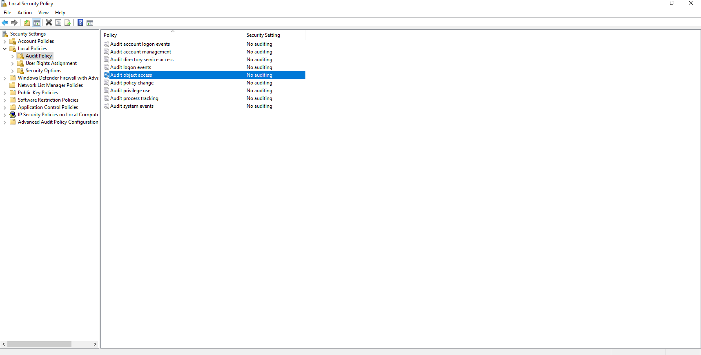Info: Check the boxes next to Success and Failure, then click Apply and OK to ensure that all access attempts—whether successful or not—will be logged. Once you're done, you can close the Local Security Policy application.
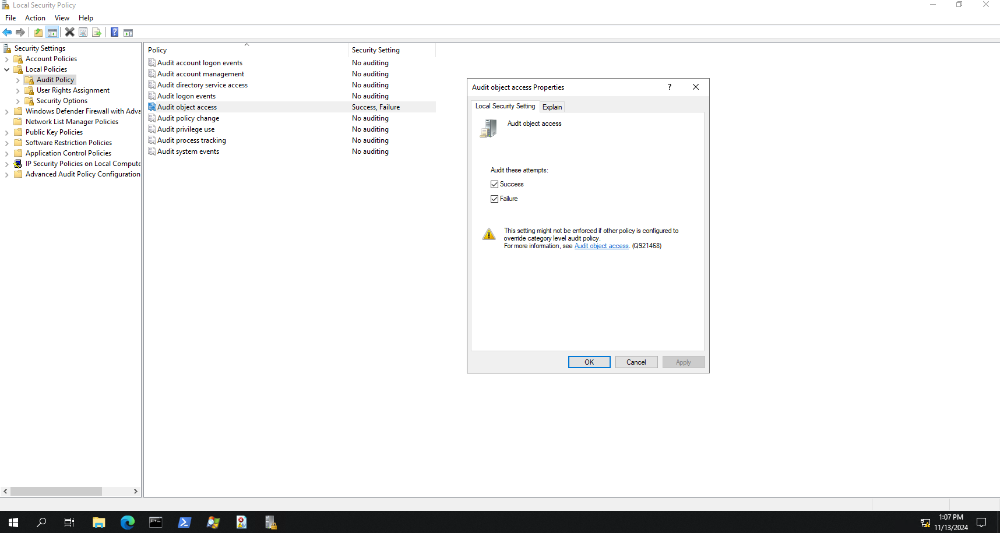Info: After configuring the Local Security Policy, monitoring won’t start automatically. We need to specify which files or folders to track. To set this up, right-click on the desktop, choose New → Text Document, and name the file Secret Document.
Infor: Then, right-click the file, select Properties → Security → Advanced → Auditing to set up monitoring for this document in our tripwire configuration
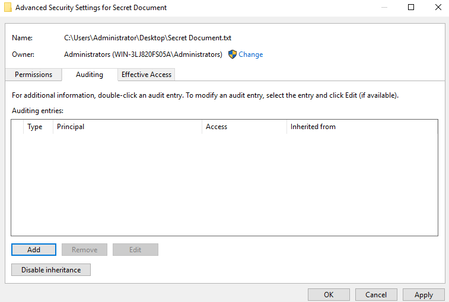Info: This is where we will create and specify an audit entry for our Secret Document. Click on Add → Select a principal.
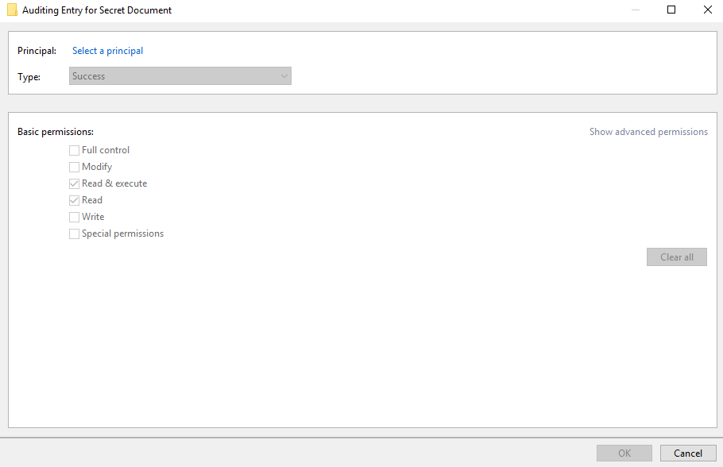Info: This pop-up allows us to specify which users or groups we want to be notified about when they access the Secret Document. While you can be very specific, for this example, we’ll keep it simple. In the text box, type "Everyone" and press Enter to monitor all users.
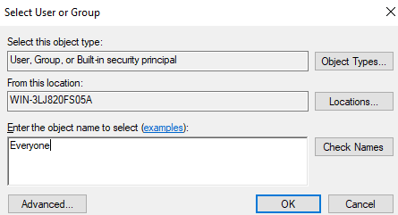 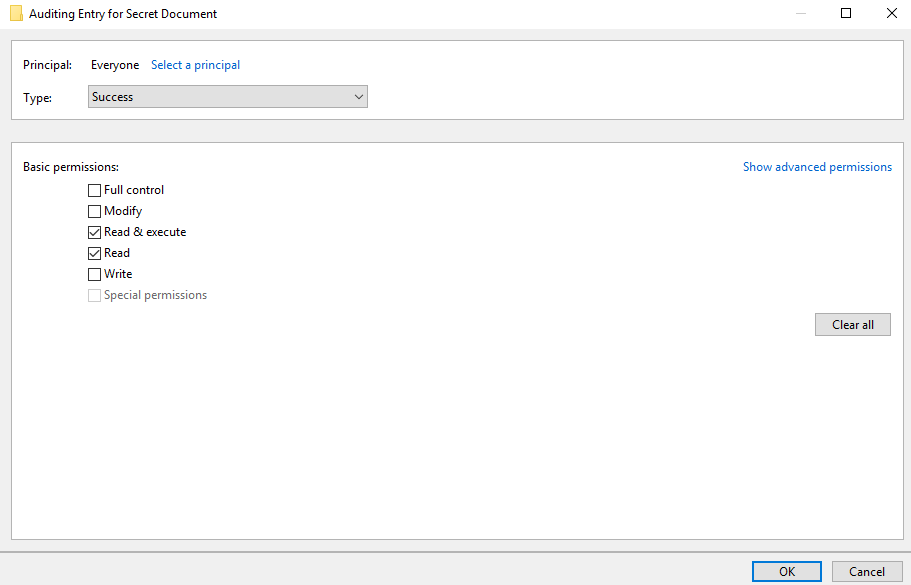Info: The Principal should now show "Everyone," and the permissions will allow you to specify which actions to audit on the Secret Document. For a broader selection, click Show advanced permissions in the top-right corner. Once you're done, click OK, then Apply and OK on the Audit entry page, and finally, click OK on the Secret Document properties. If you're tracking multiple files, it’s recommended to organize them into folders for easier auditing. The setup is now complete, and auditing is active for the Secret Document. Any access attempts will be logged in the Security event log with Event ID 4663, which can be filtered and used to generate alerts, allowing analysts to quickly detect when a tripwire is triggered, thereby enhancing the organization's security.
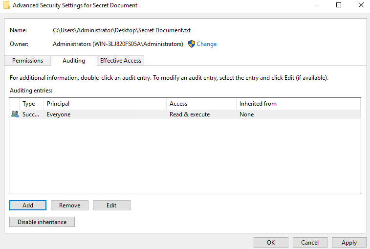Detecting: Now it's time to detect it.
Info: Let's open this file using CMD.
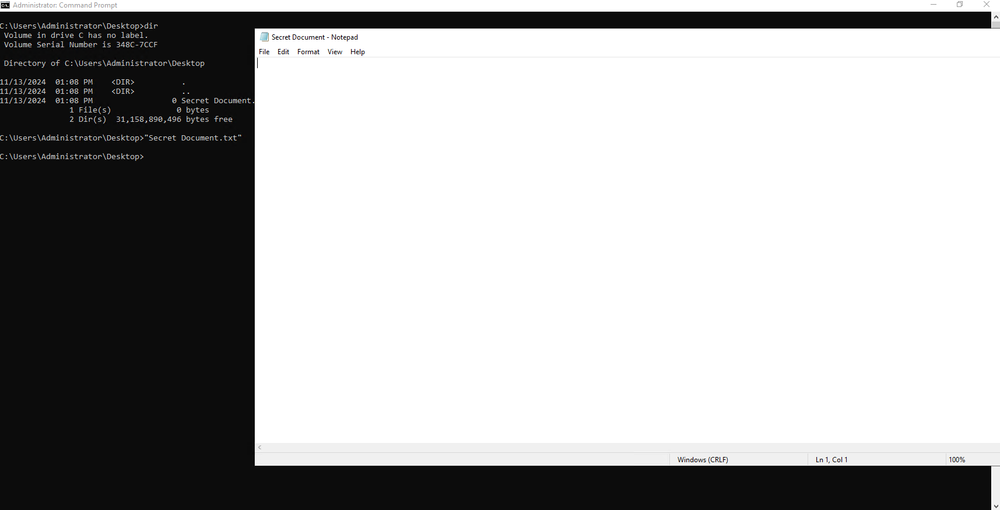Info: Now, let's use the FullEventLogView application to view the logs.
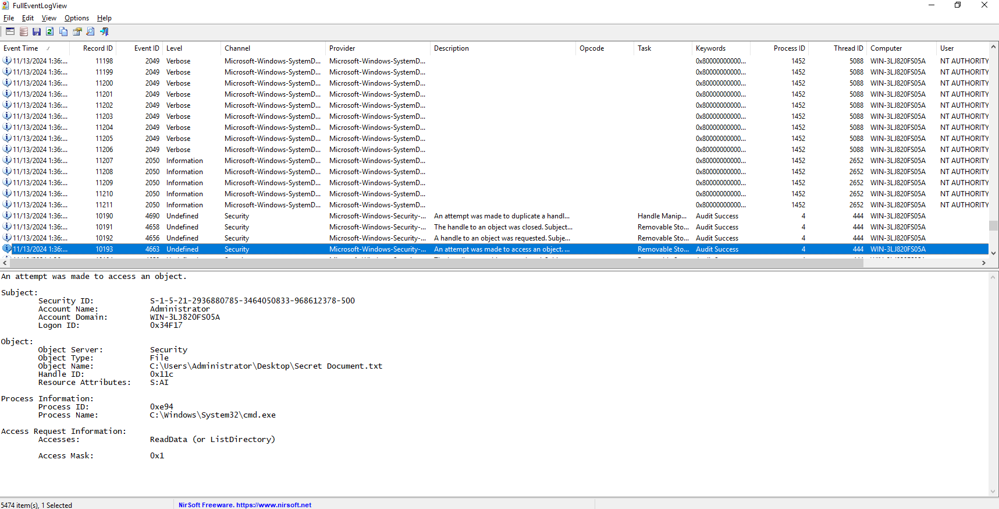Lessons Learned: Applying tactical detection is important because it enables proactive monitoring of system activities and potential security threats in real-time. By auditing access to sensitive files, such as the Secret Document, and logging every interaction with them, you can quickly identify suspicious or unauthorized behavior. This helps in detecting potential security breaches early, enabling swift response and mitigation.
Tryhackme: Friday Overtime 🐼
Description: It's a Friday evening at PandaProbe Intelligence when a notification appears on your CTI platform. While most are already looking forward to the weekend, you realise you must pull overtime because SwiftSpend Finance has opened a new ticket, raising concerns about potential malware threats. The finance company, known for its meticulous security measures, stumbled upon something suspicious and wanted immediate expert analysis.
Challenge Approach: As the only remaining CTI Analyst on shift at PandaProbe Intelligence, you quickly took charge of the situation, realising the gravity of a potential breach at a financial institution. The ticket contained multiple file attachments, presumed to be malware samples. With a deep breath, a focused mind, and the longing desire to go home, you began the process of:
Let's do it
Question: Who shared the malware samples?
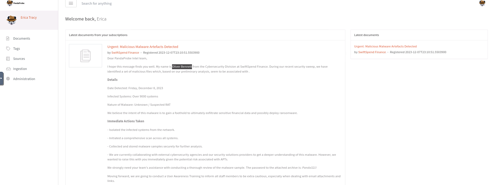Question: What is the SHA1 hash of the file "pRsm.dll" inside samples.zip?
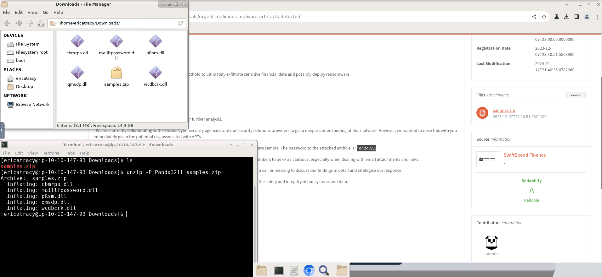 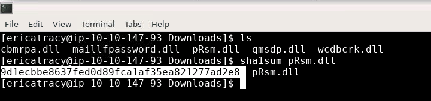Question:Which MITRE ATT&CK Technique is linked to using pRsm.dll in this malware framework?
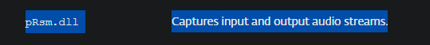 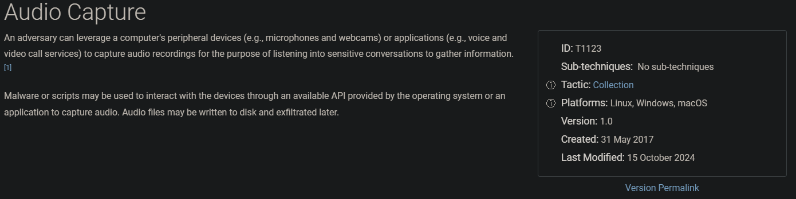Question:What is the CyberChef defanged URL of the malicious download location first seen on 2020-11-02? let's visit this site: hxxps[://]tinyurl[.]com/AptGroup for more information
 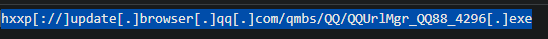
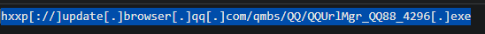
Question: What is the CyberChef defanged IP address of the C&C server first detected on 2020-09-14 using these modules?
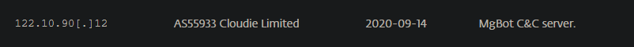Question: What is the SHA1 hash of the spyagent family spyware hosted on the same IP targeting Android devices on November 16, 2022?
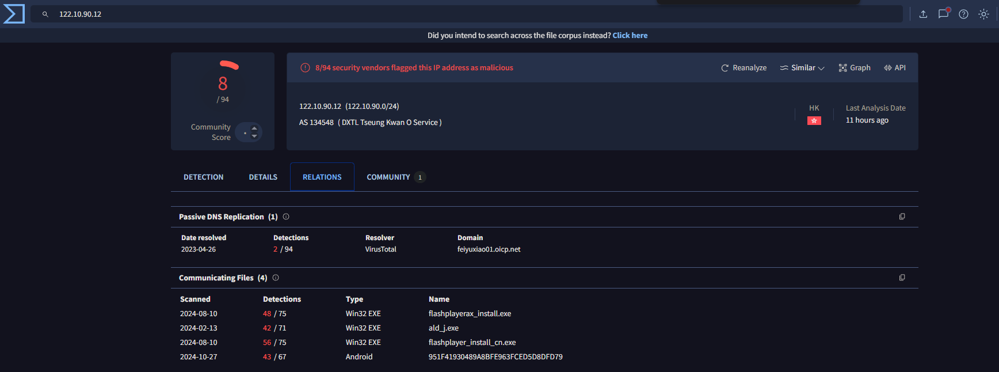 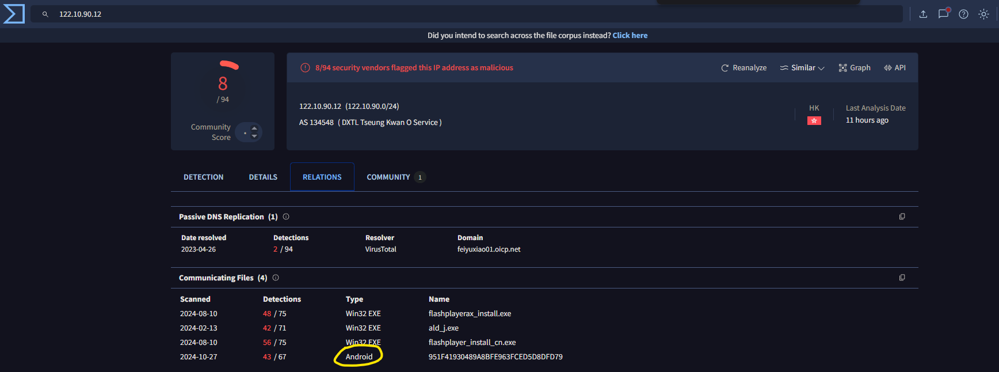
Tryhackme: Trooper

Description: A multinational technology company has been the target of several cyber attacks in the past few months. The attackers have been successful in stealing sensitive intellectual property and causing disruptions to the company's operations. A threat advisory report about similar attacks has been shared, and as a CTI analyst, your task is to identify the Tactics, Techniques, and Procedures (TTPs) being used by the Threat group and gather as much information as possible about their identity and motive. .
Challenge Approach: you will utilise the OpenCTI platform as well as the MITRE ATT&CK navigator
Let's do it
Question: What kind of phishing campaign does APT X use as part of their TTPs?
Snort - Intrusion Detection System (IDS) and an Intrusion Prevention System (IPS) 🐷
Description: Snort is a powerful open-source network intrusion detection system (IDS) and intrusion prevention system (IPS) developed by Martin Roesch and maintained by Cisco Systems. It analyzes network traffic in real-time, identifying suspicious patterns or behaviors that may indicate a security threat. With its extensive rule-based language, Snort can detect attacks, log malicious traffic, and even block it when configured as an IPS.
Challenge Approach: Setting up Snort
Let's do it
Info:Let's start by installing Snort. You can find the information on this website: snort[.]org.
Installation: If you're using Linux, you can install Snort by running the following command:
Info: Setting up Snort using the -X option for full packet dump mode.
Info: These are different switches, such as verbose mode (-v), using the interface (-i), dumping packet data mode (-d), dump (-d), and link-layer header grabbing (-e).
Info: Sending a ping request to the machine to check if Snort is able to detect it
Info: Run Snort in Logger Mode.
Important: Before diving into generating and analyzing logs, it's crucial to understand Linux file ownership and permissions. Snort requires superuser (root) privileges to sniff network traffic. When you run Snort using the sudo command, any log files it creates will be owned by the root account. As a result, you'll need root privileges to access and analyze these log files.
Info: Logging with parameter "-l".
Info: Snort captures and logs packets to a specified directory, which can be set in the snort.config file. Alternatively, you can use the -l option to specify a custom directory for log files. While the default log directory is ideal for ongoing monitoring, the -l option is particularly handy for testing scenarios, For example, using -l . in the command saves the logs directly to the current working directory.
Inportant: Note that the log file names will be different in your case.
snort.log.123456789
Info: Logging with parameter "-K ASCII"
Inportant: Note that the log file names will be different in your case.
192.168.43.112 172.16.87.25 snort.log.123456789
Info: On examining the generated folders, you'll notice that the logs are stored in an organized, categorized format and saved as ASCII files. This means the logs can be easily read and analyzed directly, without requiring a Snort instance to interpret them.
Info: In ASCII mode, logs are stored in a human-readable format and split into multiple files, making it easy to view them with a simple text editor. On the other hand, logs in binary format are not readable by humans and must be analyzed using tools like Snort or tcpdump to make sense of the data.
Info: Reading generated logs with parameter "-r"
Running in packet dump mode --== Initializing Snort ==-- Initializing Output Plugins! pcap DAQ configured to read-file. Acquiring network traffic from "snort.log.123456789". --== Initialization Complete ==-- ... Commencing packet processing (pid=3025) WARNING: No preprocessors configured for policy 0. 12/02-08:15:05.567834 10.0.0.5 -> 8.8.8.8 UDP TTL:128 TOS:0x10 ID:10045 IpLen:20 DgmLen:72 SrcPort:55444 DstPort:53 DNS Query: www.example.com =+=+=+=+=+=+=+=+=+=+=+=+=+=+=+=+=+=+=+=+=+=+=+=+=+=+=+=+=+=+=+=+=+=+=+=+=+ WARNING: No preprocessors configured for policy 0. 12/02-08:16:12.789654 192.168.1.101 -> 93.184.216.34 TCP TTL:64 TOS:0x0 ID:34560 IpLen:20 DgmLen:52 DF Seq:123456789 Ack:987654321 Win:8192 Flags: S SYN Packet =============================================================================== Packet I/O Totals: Received: 75 Analyzed: 75 (100.000%) Dropped: 0 ( 0.000%) Filtered: 0 ( 0.000%) Outstanding: 0 ( 0.000%) Injected: 0 =============================================================================== Breakdown by protocol (includes rebuilt packets): ... Total: 75 =============================================================================== Snort exiting
Inportant: It's important to note that Snort can process and interpret binary-format logs, which can also be viewed using tools like tcpdump and Wireshark. However, if you generate logs using the -K ASCII parameter, Snort will be unable to read them. As shown in the output above, Snort successfully read and displayed the log file in the same way it would when operating in sniffer mode.
reading from file snort.log.123456789, link-type EN10MB (Ethernet) IP 10.1.2.3 > 192.168.0.5: TCP 12345 > 80 [SYN] Seq=1 Ack=0 Win=65535 Len=0 IP 192.168.0.5 > 10.1.2.3: TCP 80 > 12345 [SYN, ACK] Seq=1 Ack=2 Win=8192 Len=0 IP 10.1.2.3 > 192.168.0.5: TCP 12345 > 80 [ACK] Seq=2 Ack=1 Win=65535 Len=0 IP 192.168.0.5 > 10.1.2.3: HTTP GET /index.html HTTP/1.1 IP 10.1.2.3 > 192.168.0.5: HTTP 200 OK IP 192.168.0.5 > 10.1.2.3: TCP 80 > 12345 [FIN, ACK] Seq=1000 Ack=2000 Win=8192 Len=0 IP 10.1.2.3 > 192.168.0.5: TCP 12345 > 80 [FIN, ACK] Seq=2000 Ack=1001 Win=65535 Len=0 IP 192.168.0.5 > 10.1.2.3: UDP 12345 > 53 Len=50 IP 10.1.2.3 > 192.168.0.5: UDP 53 > 12345 Len=50 IP 192.168.0.5 > 10.1.2.3: TCP 80 > 12345 [RST] Seq=1000 Win=0 Len=0
Info: The -r parameter enables users to apply filters to binary log files. By using this parameter along with Berkeley Packet Filters (BPF), you can narrow down the processed logs to view only specific packets that match your filter criteria.
$ sudo snort -r myfile.log icmp
$ sudo snort -r myfile.log tcp
$ sudo snort -r myfile.log 'udp and port 53'
Inportant: The result will be similar to the previous one, but it will display only packets that match the specified protocol. You can also control how many packets to process by using the -n parameter. For example, the following command will process just the first 10 packets from the log:
Resources about BPF: https://tinyurl.com/42kymtty
https://tinyurl.com/2k4ha737
https://tinyurl.com/3nx43hpp
Important: IDS/IPS mode helps you manage the traffic according to user-defined rules, (N)IDS/IPS mode depends on the rules and configuration.
Info: NIDS mode parameters
paramater -c: Defining the configuration file.
paramater -T: Testing the configuration file.
paramater -N: Disable logging.
paramater -D: Background mode.
paramater -A: Alert modes;
full: Full alert mode, providing all possible
information about the alert. This one also is the default mode; once you use -A and don't specify any mode, snort uses this mode.
fast: Fast mode shows the alert message, timestamp, source and destination IP, along with port numbers.
console: Provides fast style alerts on the console screen.
cmg: CMG style, basic header details with payload in hex and text format.
none: Disabling alerting
Info: Once you start running IDS/IPS mode, you need to use rules.
Rule ICMP: pre-defined ICMP rule as an example
Info: This rule is located in "/etc/snort/rules/local.rules"
Info: Snort generates an "alert" file whenever it detects traffic that matches one of its alert rules. Additionally, when you run Snort in IPS (Intrusion Prevention System) or IDS (Intrusion Detection System) mode, its sniffing and logging functions operate in a semi-passive manner by default. To fully utilize these features, you can enable them explicitly using various parameters, such as:
paramaters:
-i: Specify the network interface to monitor.
-v: Run in verbose mode to display packet details.
-d: Decode application layer data.
-e: Include link-layer information.
-X: Display full packet details in hexadecimal and ASCII.
-l: Define the logging directory.
-K ASCII: Save logs in plain text format for easier reading.
Info: IDS/IPS mode with parameter "-N" (disable logging)
Inportant: When you run Snort with specific parameters like -v (verbosity) or -X (full packet dump), the requested information will be displayed directly in the terminal. However, this means Snort won't save any logs to the designated log folder. Essentially, enabling these options redirects the output to the console instead of creating log files.
Info: IDS/IPS mode with parameter "-D" background mode
Inportant: When you run Snort with specific parameters like -v (verbosity) or -X (full packet dump) with packet logger mode (-l) you will still have the logs in the logs folder, but there will be no output in the console.
Info: Background mode will create a process, and you can check this process by executing this command in Linux:
root 1030 1800 0 02:05 ? 00:00:00 snort -c /etc/snort/snort.conf -D
Info: If you want to kill this process, you need to execute the following command:
Important: It is not recommended to use this mode unless you have a working knowledge of Snort and stable configuration.
Info: IDS/IPS mode with parameter "-A console"
Info: IDS/IPS mode with parameter "-A cmg"
cmg mode: Cmg mode provides full packet details along with rule information.
Info: IDS/IPS mode with parameter "-A fast"
fast mode: fast style alerts contain summary information on the action like direction and alert header.
Info: IDS/IPS mode with parameter "-A full"
full mode: full style alerts contain all possible information on the action.
Info: IDS/IPS mode with parameter "-A none"
Important: here is no alert file. Snort only generated the log file.
Info: IDS/IPS mode: "Using rule file without configuration file"
Info: IPS mode and dropping packets
Note: To activate Snort in IPS mode, you can use the -Q parameter along with --daq afpacket. Alternatively, you can enable IPS mode by modifying the snort.conf file. The Data Acquisition (DAQ) modules are essential for IPS functionality. Using the afpacket module allows Snort to act as an IPS. For example, specify the interfaces like this: -i eth0:eth1. It's important to note that Snort in IPS mode requires at least two network interfaces—one for incoming traffic and another for outgoing traffic.
10/14-02:30:50.80000 [Drop] [**] [1:1000001:0] ICMP Packet found [**] [Priority: 0] {ICMP} 192.180.100.15 -> 192.180.100.114
Important: Snort is not just for monitoring network traffic, logging data, or identifying and blocking threats. It also has a feature called "PCAP read/investigate mode," which allows you to analyze PCAP files. When you load a PCAP file into Snort, it processes the data and provides you with traffic statistics by default, along with any alerts based on the rules you've set up. This means you can investigate network traffic that has already been captured in a PCAP file, not just live traffic.
Info: When you read a PCAP file without using any specific settings or parameters, Snort will just give you a basic overview of the packets and provide general statistics about the file. This is usually not very helpful. The real advantage of using Snort to analyze a PCAP file comes when you apply Snort's rules, which allow you to identify known threat patterns. This makes the investigation process faster and more efficient by automatically detecting potential threats based on these predefined patterns.
Snort Mode: PCAP mode parameters
| Parameter | Description |
|---|---|
| -r / --pcap-single= | Read a single pcap |
| --pcap-list="" | Read pcaps provided in command (space separated). |
| --pcap-show | Show pcap name on console during processing. |
Info: Investigating single PCAP with parameter "-r"
12/12-12:13:29.167955 [**] [1:10000001:0] ICMP Packet found [**] [Priority: 0] {ICMP} 192.168.175.129 -> 142.250.187.110
Info: snort identified the traffic and prompted the alerts according to our ruleset.
Info: Investigating multiple PCAPs with parameter "--pcap-list"
12/12-12:13:29.167955 [**] [1:10000001:0] ICMP Packet found [**] [Priority: 0] {ICMP} 192.168.175.129 -> 142.250.187.110
...
12/12-12:13:31.204104 [**] [1:10000001:0] ICMP Packet found [**] [Priority: 0] {ICMP} 142.250.187.110 -> 192.168.175.129
Info: snort identified the traffic and prompted the alerts according to our ruleset.
Info: Investigating multiple PCAPs with parameter "--pcap-show"
Reading network traffic from "icmp-test.pcap" with snaplen = 1514 12/12-12:13:29.167955 [**] [1:10000001:0] ICMP Packet found [**] [Priority: 0] {ICMP} 192.168.175.129 -> 142.250.187.110
...
Reading network traffic from "http2.pcap" with snaplen = 1514 12/12-12:13:35.213176 [**] [1:10000001:0] ICMP Packet found [**] [Priority: 0] {ICMP} 142.250.187.110 -> 192.168.175.129
Info: snort identified the traffic, distinguished each pcap file and prompted the alerts according to our ruleset.
Question: How does a Snort rule really work?
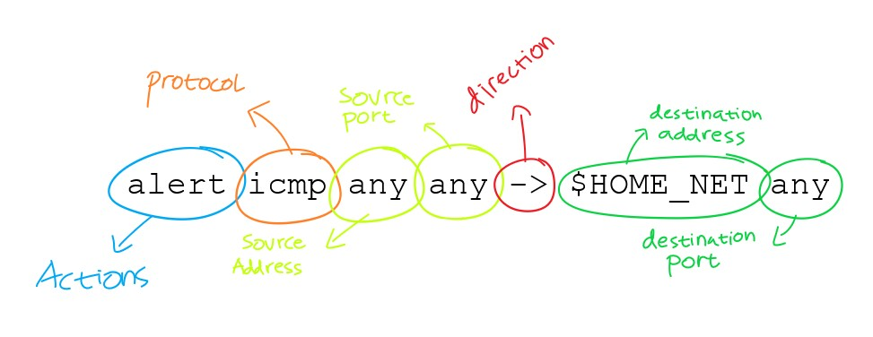Info: A Snort rule defines an action, protocol, source and destination IPs, source and destination ports, and options to specify conditions for detecting or responding to network traffic.
Important: By default, Snort operates in passive mode, meaning it only monitors network traffic and alerts you about suspicious activity, functioning as an Intrusion Detection System (IDS). To enable Intrusion Prevention System (IPS) functionality, where Snort can actively block malicious traffic, you need to switch it to "inline mode."
Info: The Snort rule structure is easy to understand but difficult to produce. You should be familiar with rule options and related details to create efficient rules.
Info: Rules cannot be processed without a header, which is mandatory, while rule options are optional. However, without using rule options, it becomes nearly impossible to detect complex or advanced attacks.
| Component | Description |
|---|---|
| Action | There are different actions a rule can take. It's important to understand how they work and test them before applying rules to live systems. Common actions include: |
| Alert | Triggers an alert and logs the packet. |
| Log | Simply logs the packet without triggering an alert. |
| Drop | Blocks the packet and logs it for review. |
| Reject | Blocks the packet, logs it, and also terminates the session associated with the packet. |
| Protocol | This defines the type of protocol that the rule is designed to filter. Snort supports four protocols in the rules: IP, TCP, UDP, and ICMP. While specific protocols like FTP aren't directly available, you can filter traffic based on port numbers, such as TCP traffic on port 21 to detect FTP traffic. |
Info: IP and Port Numbers
Note: These parameters identify the source and destination IP addresses and associated port numbers filtered for the rule.
| Rule Type | Description |
|---|---|
| IP Filtering | This rule creates an alert for each ICMP packet originating from the 192.168.1.56 IP address. |
| Filter an IP Range | This rule creates an alert for each ICMP packet from the 192.168.1.0/24 subnet. |
| Filter Multiple IP Ranges | This rule creates an alert for each ICMP packet from either the 192.168.1.0/24 or 10.1.1.0/24 subnets. |
| Exclude IP Addresses/Ranges | This rule creates an alert for each ICMP packet not originating from the 192.168.1.0/24 subnet. |
| Port Filtering | This rule creates an alert for each TCP packet sent to port 21. |
| Exclude a Specific Port | This rule creates an alert for each TCP packet not sent to port 21. |
| Filter a Port Range (Type 1) | This rule creates an alert for each TCP packet sent to ports between 1-1024. |
| Filter a Port Range (Type 2) | This rule creates an alert for each TCP packet sent to ports less than or equal to 1024. |
| Filter a Port Range (Type 3) | This rule creates an alert for each TCP packet sent to source ports higher than or equal to 1025. |
| Filter a Port Range (Type 4) | This rule creates an alert for each TCP packet sent to port 21 or 23. |
Info: The direction operator indicates the traffic flow to be filtered by Snort. The left side of the rule shows the source, and the right side shows the destination. see the picture above
| Flow Type | Description |
|---|---|
| -> | Source to destination flow. |
| <> | Bidirectional flow. |
Note: that there is no "<-" operator in Snort.
Info: three main rule options in Snort
| Rule Option Type | Description |
|---|---|
| General Rule Options | Fundamental rule options for Snort. |
| Payload Rule Options | Rule options that help investigate the payload data and detect specific payload patterns. |
| Non-Payload Rule Options | Rule options that focus on non-payload data to create specific patterns and identify network issues. |
Info: General Rule Options
| Rule Field | Description |
|---|---|
| Msg | The message field is a basic prompt and identifier for the rule. When triggered, it displays a summary of the event in the console or log. |
| Sid | Snort rule IDs (SID) must have a proper format and unique value. There are three scopes for SIDs:
|
| Reference | This field provides additional information or references, such as CVE IDs or external links, explaining the purpose of the rule or associated threat patterns. It helps analysts during alert investigations. |
| Rev | The rev field tracks rule revisions. Analysts can use this to understand rule improvements, as each rule has a unique revision number. No auto-backup is available, so analysts must maintain rule history manually. |
| Example Rule | alert icmp any any <> any any (msg: "ICMP Packet Found"; sid: 100001; reference: cve, CVE-XXXX; rev: 1;) |
Info: Payload Detection Rule Options
| Rule Field | Description |
|---|---|
| Content | Matches specific payload data by ASCII, HEX, or both. This option can be used multiple times in a rule. However, the more specific patterns you add, the more time it takes to investigate packets. |
| Example: ASCII Mode | Creates an alert for each HTTP packet containing the keyword "GET". Case-sensitive. |
| Example Rule (ASCII) | alert tcp any any <> any 80 (msg: "GET Request Found"; content:"GET"; sid: 100001; rev:1;) |
| Example: HEX Mode | Creates an alert for HTTP packets with the HEX representation of "GET". |
| Example Rule (HEX) | alert tcp any any <> any 80 (msg: "GET Request Found"; content:"|47 45 54|"; sid: 100001; rev:1;) |
| Nocase | Disables case sensitivity in the content match, making searches more flexible. |
| Example Rule (Nocase) | alert tcp any any <> any 80 (msg: "GET Request Found"; content:"GET"; nocase; sid: 100001; rev:1;) |
| Fast_pattern | Optimizes the content search by prioritizing a specific content match for faster packet analysis. It is case-insensitive and can only be used once per rule. It's especially useful when there are multiple content options. |
| Example Rule (Fast_pattern) | alert tcp any any <> any 80 (msg: "GET Request Found"; content:"GET"; fast_pattern; content:"www"; sid: 100001; rev:1;) |
Info: Non-Payload Detection Rule Options
Note: There are rule options that focus on non-payload data. These options will help create specific patterns and identify network issues.
| Rule Field | Description |
|---|---|
| ID | Filters based on the IP ID field. The ID field can be used to identify packets with a specific IP identification number. |
| Example Rule (ID) | alert tcp any any <> any any (msg: "ID TEST"; id:123456; sid: 100001; rev:1;) |
| Flags | Filters based on TCP flags. The following flags can be used:
|
| Example Rule (Flags) | alert tcp any any <> any any (msg: "FLAG TEST"; flags:S; sid: 100001; rev:1;) |
| Dsize | Filters based on the packet payload size. You can define a size range or use conditions like greater than or less than a specified size. |
| Example Rule (Dsize) | alert ip any any <> any any (msg: "SEQ TEST"; dsize:100<>300; sid: 100001; rev:1;) |
| Sameip | Filters for duplication of source and destination IP addresses in the packet. |
| Example Rule (Sameip) | alert ip any any <> any any (msg: "SAME-IP TEST"; sameip; sid: 100001; rev:1;) |
Important: once you create a rule, it is a local rule and should be in your "local.rules" file. This file is located under "/etc/snort/rules/local.rules".
Info: That is your "local.rules" file.
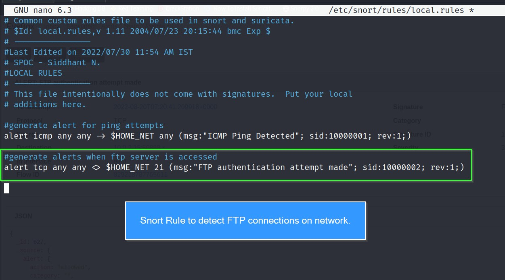Info: Note that there are some default rules activated with snort instance.
Hands-on experience challenge.
Problem: Write a single rule to detect "all TCP port 80 traffic" packets in the given pcap file.
My Rule: This is the rule that I have come for this challenge. 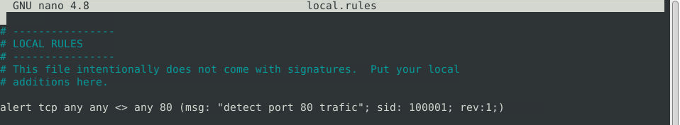
1: What is the number of detected packets? 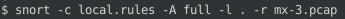 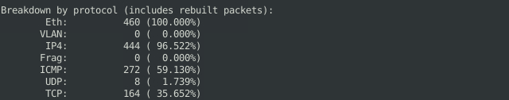
2: What is the destination address of packet 63?
Info: Investigate the log file.
Note: Remember that we have a lot of packages to analyze, so we need to find packet 63. This can be shortened by using the switch 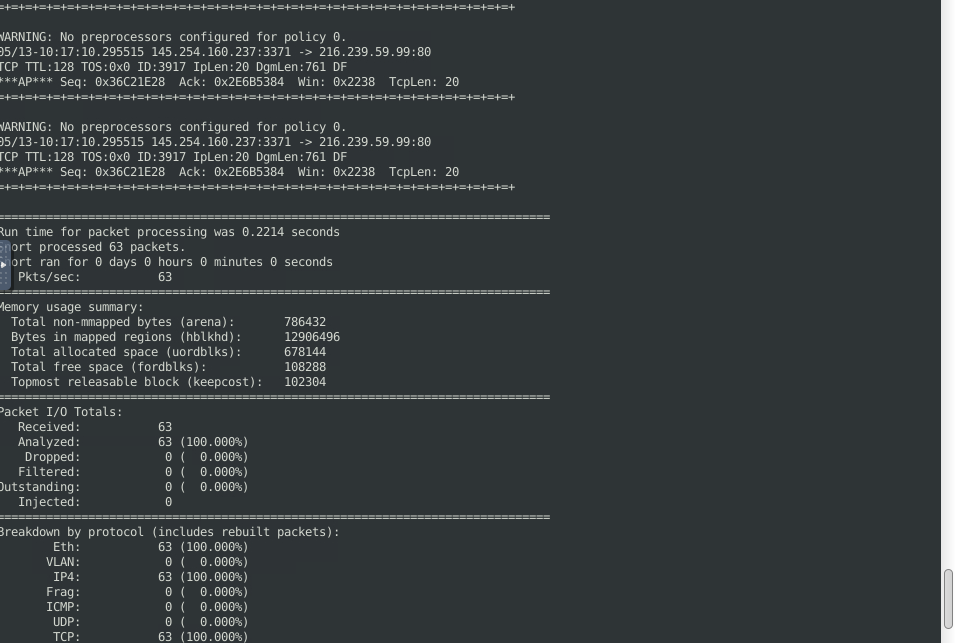
3: What is the ACK number of packet 64? 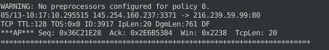
4: What is the SEQ number of packet 62? 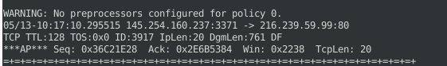
5: What is the TTL of packet 65?? 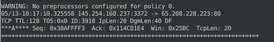
6: What is the source IP of packet 65?
7: What is the source port of packet 65?
FTP: Write a single rule to detect "all TCP port 21"
8: What is the number of detected packets? 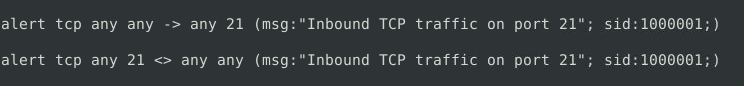
9: What is the FTP service name?
 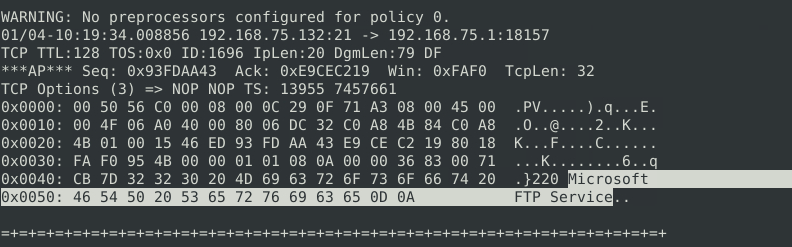
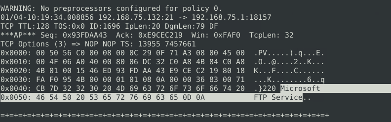
FTP: Write a rule to detect failed FTP login attempts
10: What is the number of detected packets?
Important: "For this, I would recommend using this link: https://tinyurl.com/ms9njv75 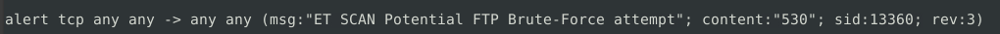
FTP: Write a rule to detect successful FTP logins
11: What is the number of detected packets?
FTP: Write a rule to detect FTP login attempts with a valid username but no password entered yet.
12: What is the number of detected packets? 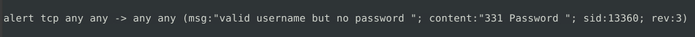
FTP: Write a rule to detect FTP login attempts with the "Administrator" username but no password entered yet.
13: What is the number of detected packets? 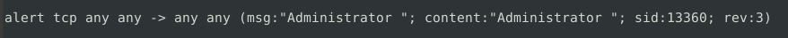
Undertanding Cyber Kill Chain ⛓️
Description: The Cyber Kill Chain is a systematic model developed by Lockheed Martin that outlines the stages of a cyberattack, providing organizations with a framework to understand, detect, and disrupt adversary activities. This chain highlights the steps attackers take, from initial reconnaissance to achieving their final objectives, such as data theft or operational disruption. By breaking the attack into stages, defenders can develop strategies to protect systems and stop adversaries before significant damage occurs.
Challenge Approach: Understanding and leveraging the Cyber Kill Chain requires knowledge of the Tactics, Techniques, and Procedures (TTPs) used by attackers. Tools like OpenCTI and the MITRE ATT&CK Navigator help security professionals map these TTPs to each stage of the chain, enabling precise identification of vulnerabilities and appropriate countermeasures. These platforms also allow analysts to cross-reference threat intelligence reports and gain insights into threat actor motives and methods, ultimately enhancing an organization's defensive posture.
Question: What is the Cyber Kill Chain?
The Cyber Kill Chain is a framework that describes the steps attackers take to execute a cyberattack. It helps organizations understand the attacker’s workflow and identify opportunities to disrupt the attack. The chain includes seven stages: Recon, Weaponization, Delivery, Exploitation, Installation, Command and Control (C2), and Actions on Objectives. Understanding and intervening at each stage can prevent attacks from succeeding.
Question: What is the first stage of the Cyber Kill Chain?
1. Recon: During the reconnaissance stage, attackers gather information about their target. This could involve:
- Passive Recon: Searching public sources (e.g., LinkedIn, Shodan, social media, company websites).
- Active Recon: Scanning for vulnerabilities, open ports, or exposed services using tools like Nmap or Nessus.
- Limit the information available publicly (e.g., remove unnecessary metadata from documents).
- Implement network monitoring to detect scanning activities.
- Use deception technologies, such as honeypots, to mislead attackers.
Question: What happens in the weaponization stage?
2. Weaponize: Attackers create a payload (e.g., malware, exploit) based on the information gathered. The payload is designed to exploit a vulnerability and deliver a foothold in the target system. For example, an attacker may create a malicious document with embedded macros. To protect against weaponization:
- Maintain up-to-date patching to reduce exploitable vulnerabilities.
- Conduct threat intelligence to anticipate and block known malware types.
Question: How does the payload reach the target?
3. Delivery: In this stage, attackers deliver the payload to the victim. Common methods include phishing emails with malicious attachments, drive-by downloads from compromised websites, or physical methods like USB drives. To disrupt delivery:
- Implement email filtering to detect and block phishing attempts.
- Educate employees about recognizing phishing and suspicious links.
- Limit access to unnecessary USB ports or external devices.
Question: What marks the transition from delivery to exploitation?
4. Exploitation: The delivered payload is executed on the victim’s machine, exploiting a vulnerability to gain access. For example, this could be a zero-day exploit or a macro-enabled document triggering malicious code. To mitigate exploitation:
- Use application whitelisting to block unauthorized programs.
- Enforce strong user permissions and minimize admin rights.
- Deploy endpoint protection tools to detect suspicious activity.
Question: How does the attacker maintain their presence?
5. Installation: Malware is installed on the system, creating persistence. This could involve backdoors, droppers, or rootkits to maintain control of the compromised system. To disrupt installation:
- Use application monitoring to detect unauthorized installations.
- Deploy anti-malware tools to identify and block malicious files.
- Conduct regular scans for anomalies in file integrity.
Question: What is the purpose of command and control (C2)?
6. Command and Control: Attackers establish a communication channel with the compromised machine. This allows them to issue commands, exfiltrate data, or download additional tools. They may use encrypted channels or legitimate protocols to avoid detection. To disrupt C2:
- Monitor for unusual outbound connections or traffic patterns.
- Block access to known malicious IP addresses or domains.
- Use DNS filtering to prevent connections to malicious sites.
Question: What is the final stage of the Cyber Kill Chain?
7. Actions on Objectives: This is the attacker’s end goal, which may involve data exfiltration, deploying ransomware, or further lateral movement within the network. To protect against this stage:
- Implement robust data encryption to protect sensitive information.
- Use monitoring tools to detect and respond to unusual data access or transfer.
- Conduct regular incident response drills to prepare for potential attacks.
Question: Can the stages of the Cyber Kill Chain repeat?
Yes, attackers may revisit earlier stages, such as recon or exploitation, to expand their foothold. For example, once inside the network, they might perform internal reconnaissance to find additional targets. Proactively disrupting the attack early in the chain minimizes damage and reduces the attacker’s chances of success.
Incident Handling Process 👲
Description: The Incident Handling Process is a systematic approach designed to help organizations respond to and recover from security incidents. The process consists of four stages: Preparation, Detection and Analysis, Containment/Eradication/Recovery, and Post-Incident Activities. It enables incident handlers to proactively prepare for potential threats, detect malicious events early, contain and recover from incidents effectively, and learn from past incidents to improve future responses. By following this cyclical process, organizations can ensure a swift and coordinated response to security breaches and minimize the impact of cyberattacks.
Challenge Approach: The Incident Handling Process requires a strong understanding of the tools, techniques, and procedures (TTPs) used during an incident. By utilizing frameworks like NIST’s guidelines and leveraging technologies for monitoring, detection, and recovery, organizations can stay ahead of potential threats. Incident response teams use these resources to identify compromised systems, mitigate ongoing attacks, and restore normal operations. After an incident, post-incident activities, such as lessons learned and root cause analysis, ensure that organizations can improve their preparedness for future attacks.
Question: What is the Incident Handling Process?
The Incident Handling Process is a structured framework used by organizations to prepare for, detect, respond to, and learn from security incidents. It enables organizations to minimize damage, recover efficiently, and prevent similar incidents in the future. The process, as defined by NIST, has four key stages: Preparation, Detection and Analysis, Containment/Eradication/Recovery, and Post-Incident Activities. It is dynamic and cyclic, meaning steps may need to be revisited as new evidence arises.
Question: What are the stages of the Incident Handling Process?
1. Preparation: This stage focuses on equipping the organization with the tools, plans, and skills needed to respond to incidents. Examples include creating an incident response plan, conducting regular training, and ensuring the availability of key tools like firewalls, intrusion detection systems, and logging mechanisms.
2. Detection and Analysis: The focus here is identifying potential incidents and determining their scope and impact. Organizations monitor systems for unusual activities using tools like SIEMs, analyze logs, and use threat intelligence to identify malicious events. Quick and accurate detection is critical to minimize damage.
3. Containment, Eradication, and Recovery: After an incident is identified, this stage focuses on stopping the threat (containment), removing it (eradication), and restoring systems to normal operations (recovery). For example, isolating infected machines, removing malware, and restoring clean backups.
4. Post-Incident Activities: Once the incident is resolved, the organization documents the cause, impact, and response actions in an incident report. A "lessons learned" session is conducted to identify improvements in processes and defenses to prevent similar incidents in the future.
Question: Why is the process considered cyclic?
The Incident Handling Process is cyclic because, as new evidence is uncovered, teams may need to revisit earlier stages. For example, during recovery, additional infected machines might be discovered, requiring further containment and analysis. This ensures no gaps are left in the response process.
Question: What are the two main activities in incident handling?
1. Investigation: This involves determining the "patient zero" (the first system compromised), understanding the attacker’s tools and techniques, and documenting affected systems and actions.
2. Recovery: After the investigation, organizations create and execute a recovery plan to remove threats and restore systems. Normal business operations should resume as quickly as possible.
Question: What happens after the incident is resolved?
Once an incident is fully handled, a detailed report is created to document the cause, impact, and response actions. Additionally, "lessons learned" activities are conducted to identify weaknesses in current defenses and implement measures to prevent future incidents of the same nature.
the Preparation Stage
- Establishing Incident Handling Capability: This involves setting up a team and processes to effectively manage incidents when they occur. The team needs to be ready to identify, respond to, and mitigate security incidents in an organized way.
- Implementing Protective Measures: Although incident handling is not responsible for protection, having protective measures in place is vital for minimizing the likelihood and impact of incidents. These measures include things like securing endpoints, hardening servers, using multi-factor authentication, and managing privileged access.
Preparation Prerequisites
Before an incident occurs, several foundational elements must be in place:
- Skilled Incident Handling Team Members: The organization should have knowledgeable team members, either in-house or outsourced, who understand incident handling. At a minimum, basic knowledge must exist internally.
- Trained Workforce: Employees should be trained through security awareness activities or other training programs to recognize and report potential incidents.
- Clear Policies and Documentation: Written procedures and policies should cover incident handling steps, roles, responsibilities, and communication plans. These documents will guide the team during an actual incident.
- Tools: Both software and hardware tools are necessary for incident handling, such as forensic tools, network capture tools, and communication systems.
Clear Policies and Documentation
The documentation created in the preparation phase must include the following:
- Incident Handling Team Contacts: Ensure all team members' roles and contact info are clearly outlined.
- Legal and Compliance Contacts: Information for the legal team, law enforcement, external teams, and other departments that may need to be contacted during or after an incident.
- Incident Response Procedures: Well-defined response plans, including procedures for information sharing, escalation, and collaboration.
- Baseline Information: Knowledge of system configurations and network diagrams to understand what's "normal" and to quickly spot deviations during an incident.
- User Accounts with Elevated Privileges: Pre-configured accounts with necessary privileges to allow the incident team to act swiftly during an incident, and that can be disabled after the incident is resolved.
- Procurement Flexibility: The ability to quickly acquire tools or resources without bureaucratic delays to avoid slowdowns during critical moments.
- Forensic/Investigative Cheat Sheets: Predefined checklists or procedures to guide investigators during the forensic process, minimizing mistakes in the heat of the moment.
- Compliance Knowledge: Familiarize the team with legal and compliance requirements related to incidents, such as data breach notification laws (e.g., GDPR).
- Effective Reporting Capability: During an incident, accurate documentation is essential. Teams should document every step taken with precise timestamps, results, and personnel involved, focusing on the "who, what, when, where, why, and how."
Tools (Software & Hardware)
Having the right tools is crucial. These tools should enable the team to capture, preserve, and analyze evidence, as well as respond to incidents effectively:
- Laptops/Workstations: Devices used for investigation, free of corporate security software (e.g., antivirus), to prevent interference with the analysis of malware.
- Forensic Tools: Software for acquiring disk images, capturing memory, analyzing logs, and identifying Indicators of Compromise (IOCs).
- Network Tools: Network capture and analysis tools, network cables, and switches for investigating network traffic during an incident.
- Hardware Tools: Items like write blockers (to preserve evidence), screwdrivers, and power cables for dealing with physical devices or equipment during investigations.
- Incident Handling System: A system for tracking incidents, documenting actions, and managing the incident lifecycle.
- Jump Bag: A portable set of tools that the team can grab quickly to respond to an incident without wasting time gathering resources.
Additional Considerations
- Independent Documentation System: It's critical that the incident documentation system is separate from the organization's infrastructure. This ensures that in case of a compromise, the documentation remains safe and available.
- Communication Channels: Use communication tools that are separate from the organization's systems. If adversaries have control over your network, email and internal systems may be compromised, so secure external communication channels are needed.
Protecting Against Incidents
Although protecting against incidents isn't directly the responsibility of an incident handling team, it’s crucial for them to be aware of protection efforts. By understanding what protective measures are in place, they can better identify and analyze threats, and know where to look for evidence during an incident investigation.
Key Protective Measures
DMARC (Domain-based Message Authentication, Reporting, and Conformance)
Purpose: DMARC is an email protection mechanism that helps prevent phishing by verifying the authenticity of incoming emails. It works on top of SPF (Sender Policy Framework) and DKIM (DomainKeys Identified Mail).
How it works: If an email pretends to come from your organization, DMARC helps reject it before it reaches the recipient.
Challenge: While easy to set up, thorough testing is necessary to avoid blocking legitimate emails unintentionally. False positives can occur, especially with emails sent from third-party services that may fail DMARC checks.
Endpoint Hardening & EDR (Endpoint Detection and Response)
Endpoint Hardening: This involves securing endpoint devices (like workstations and laptops), which are often the primary entry points for attackers. Recommended actions include:
- Disabling LLMNR and NetBIOS to reduce risks from local network-based attacks.
- Implementing LAPS (Local Administrator Password Solution) to manage admin privileges.
- Restricting PowerShell to prevent misuse by attackers.
- Enabling Attack Surface Reduction rules in security tools like Microsoft Defender.
- Whitelisting applications, which involves blocking the execution of unauthorized files from places like user directories.
- Using host-based firewalls to limit unnecessary network traffic.
EDR Solutions: Implement EDR tools to detect malicious behavior and provide deeper visibility into threats on endpoints.
Network Protection
Network Segmentation: Isolating business-critical systems to prevent attackers from easily spreading across the network. Systems should only have access as required for their business function.
IDS/IPS (Intrusion Detection/Prevention Systems): These tools help detect and prevent malicious traffic. When SSL/TLS interception is used, these systems can analyze traffic content directly, improving detection accuracy.
Device Control: Implement solutions like 802.1x or Conditional Access to ensure only approved devices can access the network.
Privilege Identity Management, MFA, and Strong Passwords
Privilege Identity Management: Protect administrative accounts by reducing exposure to attacks that steal privileged credentials.
MFA (Multi-factor Authentication): Implement MFA, particularly for administrative access to sensitive systems and applications.
Password Management: Encourage employees to use strong passphrases rather than weak passwords. Passphrases are longer and more difficult to guess, e.g., “i LIK3 my coffeE warm.” A combination of languages can enhance security further.
Vulnerability Scanning
Conduct continuous scans of your environment to identify vulnerabilities. Critical or high-risk vulnerabilities should be prioritized for patching. Systems that can’t be patched should be segmented to limit potential exposure.
User Awareness Training
Security Awareness: Regularly train users to recognize and report suspicious activity. Conduct surprise tests like phishing simulations to gauge employee vigilance.
Active Directory Security Assessment
Active Directory (AD) is often targeted for privilege escalation attacks. Conduct regular assessments of AD configurations and security controls to ensure that attackers can’t easily escalate their privileges.
Third-Party Audits: If the in-house team lacks expertise, hire third-party auditors to help identify vulnerabilities.
Purple Team Exercises
Purple Teaming combines the efforts of both red teams (attackers) and blue teams (defenders). These exercises help test the organization's security posture by simulating real-world attacks, identifying gaps in detection, and improving incident handling procedures.
- Red Team: Simulates the attacks.
- Blue Team: Works to detect, respond, and defend against the attacks.
- Goal: Improve collaboration and effectiveness of both teams, enhance detection capabilities, and refine incident response playbooks.
Detection & Analysis Stage
At this point, we have created processes, procedures, and guidelines on how to act upon security incidents.
The Detection & Analysis phase involves detecting an incident using various sources, such as sensors, logs, and trained personnel. It also includes information and knowledge sharing, as well as utilizing context-based threat intelligence. Additionally, segmentation of the architecture and having clear visibility within the network are critical factors for effective detection.
Threat Detection Sources
Threats can be introduced to the organization via an infinite number of attack vectors, and detection can come from several sources:
- Employee Reports: An employee noticing abnormal behavior.
- Alerts from Tools: Alerts from tools like EDR, IDS, firewalls, SIEM, etc.
- Threat Hunting: Proactively looking for threats.
- Third-Party Notifications: A third-party organization notifying you that your systems may be compromised.
Levels of Detection
It’s crucial to create layers of detection across the network:
- Network Perimeter Detection: Using firewalls, IDS/IPS systems at the perimeter, and demilitarized zones (DMZs).
- Internal Network Detection: Using local firewalls, host intrusion detection/prevention systems (HIDS/HIPS), etc.
- Endpoint Detection: Using antivirus software, endpoint detection & response (EDR) systems, etc.
- Application Detection: Using application logs, service logs, etc.
Initial Investigation
When a security incident is detected, it’s essential to conduct some initial investigation to establish context before assembling the incident response team. Information must be gathered about:
- Date/Time of the incident and who reported it.
- How the incident was detected.
- What the incident is (e.g., phishing, system unavailability).
- Impacted systems (if relevant).
- Who accessed impacted systems and what actions were taken.
- Physical location, OS, IP addresses, hostnames, and system owner information.
- If malware is involved, include relevant information such as IP addresses, date/time of detection, malware type, and forensic data (e.g., file hashes, copies of the files).
Incident Timeline
With the gathered information, start building an incident timeline. This timeline keeps you organized and provides a clear picture of what happened. The events are time-sorted based on when they occurred, but later investigation might reveal evidence in an unordered sequence.
| Date | Time of the event | Hostname | Event Description | Data Source |
|---|---|---|---|---|
| 09/09/2021 | 13:31 CET | SQLServer01 | Hacker tool 'Mimikatz' detected | Antivirus Software |
Incident Severity & Extent Questions
When handling a security incident, answer the following questions to assess the severity and extent:
- What is the exploitation impact?
- What are the exploitation requirements?
- Can any business-critical systems be affected?
- Are there suggested remediation steps?
- How many systems have been impacted?
- Is the exploit being used in the wild?
- Does the exploit have worm-like capabilities?
Incident Confidentiality & Communication
Incident-related information is highly confidential. All information should be kept on a need-to-know basis unless instructed otherwise. The appointed person will handle communication according to legal requirements.
When an investigation begins, set expectations and goals, which may include the incident type, sources of evidence, and rough time estimates. As the investigation evolves, expectations and findings may change.
In the Detection & Analysis stage, the focus is on understanding what happened during an incident and how it unfolded. It’s not enough to simply rebuild affected systems and move on. If we don't know how the attacker gained access or what was impacted, any remediation steps we take might not prevent them from regaining access. The goal is to figure out exactly how the adversary entered, what tools were used, and which systems were compromised. This detailed knowledge allows the response team to plan more effective remediation strategies that prevent the attack from recurring.
Investigation Process
The investigation starts with limited, initial information about the incident. Using this data, the incident handling team embarks on a cyclic process of investigation that iterates as new information is discovered. The three main steps in this process are:
- Creation and usage of Indicators of Compromise (IOCs)
- Identification of new leads and impacted systems
- Data collection and analysis from the new leads and impacted systems
These steps are continuously repeated as more evidence comes in, refining the understanding of the attack.
Initial Investigation Data
The investigation must be based on reliable leads that are identified throughout the entire process. The initial phase is just the beginning. Investigators shouldn’t solely focus on one specific finding, such as a known malicious tool. Narrowing the investigation too early leads to incomplete conclusions and can miss important parts of the attack, resulting in a lack of full understanding of the incident’s impact.
Creation & Usage of IOCs
Indicators of Compromise (IOCs) are evidence that an incident has taken place. These include things like IP addresses, file hashes, and file names. IOCs are used to track and document signs of compromise. OpenIOC and Yara are common standards used to create and share IOCs. Special tools, like Mandiant's IOC Editor, allow for creating and editing these indicators in a standardized format.
Once IOCs are created, investigators use them with tools (native or third-party) to search for signs of compromise in systems. It's crucial to ensure that no privileged credentials are cached during this search process, as this can create new vulnerabilities. Using the correct tools that don't cache credentials (like WinRM or certain PowerShell commands) is essential during an investigation to avoid leaving traces on compromised systems.
Identification of New Leads & Impacted Systems
Once IOCs are applied to systems, hits (matches) can reveal additional compromised systems. However, not all hits will be directly related to the incident. Some may be false positives, or IOCs could be too broad. In such cases, investigators need to prioritize which systems to focus on, ideally starting with those that offer new leads that might be valuable in the investigation.
Data Collection & Analysis from New Leads & Impacted Systems
After identifying potentially impacted systems, data needs to be collected to understand the extent of the compromise. There are two main approaches to this:
- Live Response: In this approach, the system is analyzed while it’s still running, collecting real-time data. This method is most commonly used, as it preserves running memory and other volatile data that might provide crucial evidence.
- Shutting Down the System: In some cases, it may be necessary to shut down the system to prevent further harm. However, this risks losing valuable information stored in the system's volatile memory (RAM). Therefore, decisions on whether to shut down a system must be carefully considered.
Regardless of the method, it’s vital to minimize interaction with the system to avoid altering or corrupting any evidence.
Once the data is collected, it’s analyzed, which often involves tasks like malware analysis and disk forensics. The process can be time-consuming, but it’s crucial for identifying how the attack unfolded. Memory forensics has also become an increasingly important capability, especially in more sophisticated attacks.
Chain of Custody
During the entire investigation, maintaining a chain of custody is essential. This ensures that any evidence collected can be legally used in court, if necessary. Proper documentation of each step in the collection process helps maintain the integrity of the evidence.
1. Containment
Containment refers to actions taken to prevent the incident from spreading and causing further damage. It is divided into short-term and long-term containment:
Short-term Containment
The goal here is to quickly stop the attack's spread while keeping the system as intact as possible to preserve evidence for investigation. Examples of short-term containment include:
- Isolating affected systems: This could involve placing compromised systems in a separate network segment (VLAN) to prevent further communication with other systems.
- Disconnecting from the network: Physically disconnecting systems from the network, such as pulling the network cables, can stop further exploitation.
- Blocking Command and Control (C2) communication: If the attacker is using a specific domain or IP address for communication with compromised systems, redirecting or blocking that address can cut off the attacker's access.
Long-term Containment
This involves more permanent actions to ensure that the attacker cannot continue their activities in the system. Examples include:
- Changing passwords: Especially for administrative accounts that may have been compromised.
- Applying security patches: Fixing any vulnerabilities that were exploited during the attack.
- Adding security monitoring: Implementing host intrusion detection systems (HIDS) and more comprehensive firewall rules to detect any new malicious activity.
It's important that both short-term and long-term containment are coordinated across all impacted systems. Otherwise, the attacker might become aware of the response and change their tactics, evading detection.
2. Eradication
Eradication focuses on completely removing the threat from the environment and fixing the root cause of the incident. The goal is to make sure the adversary is no longer present and that any remaining traces of the attack are eliminated.
- Removing malware: Any malware discovered during the investigation phase should be completely removed from all affected systems.
- Rebuilding systems: In some cases, it may be necessary to rebuild compromised systems from scratch to ensure that no hidden threats remain.
- Restoring from backups: Systems that were heavily affected might need to be restored from known good backups.
- Applying additional patches: If certain patches were not immediately applied during containment, they should be implemented now to further secure the system.
- Hardening systems: Additional hardening measures (like improving system security configurations) should be taken to prevent similar attacks in the future.
3. Recovery
Recovery involves bringing the affected systems back to normal operation. This stage focuses on ensuring that the systems are functional, secure, and able to support business operations once again. It's a careful and gradual process:
- System verification: The business or the relevant stakeholders need to verify that the systems are functioning correctly and that they contain all necessary data. This ensures the systems are not only operational but also safe from compromise.
- Reintroducing systems into the production environment: Once verified, the systems are returned to normal operations and connected back to the production environment.
- Ongoing monitoring: After recovery, systems need to be monitored closely, as they are often prime targets for attackers looking to re-enter the environment. Suspicious events to look out for include:
- Unusual login attempts (e.g., unfamiliar user accounts or service accounts).
- Unexpected or suspicious processes running on systems.
- Unauthorized changes to system settings, particularly in areas commonly altered by malware (e.g., system registries).
Phased Recovery
In large-scale incidents, recovery may take a long time and can happen in phases. Early stages may focus on quick fixes like applying basic security measures (e.g., updating software, implementing firewalls), while later phases may focus on more permanent changes like improving overall security and performing system-wide hardening.
Post-Incident Activities
The recovery stage may also involve reviewing lessons learned and updating the organization’s incident response plan to better handle future attacks. During this time, the team will identify weaknesses in the existing defenses and work on improving security posture to prevent future incidents.
Key Takeaways
- Containment stops the spread of the incident and limits damage by isolating affected systems and applying immediate fixes.
- Eradication removes the root cause of the issue, such as malware, vulnerabilities, and compromised data.
- Recovery brings systems back online in a secure state while closely monitoring for any signs of the attacker trying to regain access.
The main idea of these stages is to ensure that once the incident is contained, the organization works toward fully eradicating the threat and bringing systems back online securely, without leaving vulnerabilities that could be exploited again.
Post-Incident Activity Stage
The Post-Incident Activity Stage is the final phase of an incident response process, where the focus shifts from dealing with the immediate threat to learning from the experience and improving the organization’s response capabilities. The key objectives during this stage are to analyze what happened, document the incident, and reflect on how the response can be improved for future incidents. This stage also offers an opportunity to involve all the stakeholders who were part of the incident handling process to share insights and lessons learned. Here's a breakdown of the main components:
1. Objective of the Post-Incident Activity Stage
The primary goal here is to reflect and learn from the incident. By understanding the details of what happened, the actions taken, and their outcomes, the organization can strengthen its ability to respond to future incidents. This stage is typically conducted through a meeting where key team members and stakeholders (such as incident responders, security team, IT staff, legal team, etc.) gather to analyze the incident's impact and response effectiveness. The meeting usually takes place days after the incident once the incident report is complete.
2. Reporting
A final incident report is created at the end of this stage. This report provides a comprehensive overview of the incident and answers several important questions:
- What happened and when?: Details about the incident timeline, the nature of the attack, and how it unfolded.
- Team performance: How well did the team respond based on existing plans, playbooks, policies, and procedures? Were the responses effective, or were there any gaps?
- Business involvement: Did the business respond quickly and provide necessary information? Were there any delays or obstacles that impacted the response?
- Containment and eradication actions: What specific actions were taken to stop the incident and eliminate the threat?
- Preventive measures: What steps can be taken to prevent a similar incident from happening in the future?
- Detection and analysis improvements: What tools or resources are needed to better detect and analyze future incidents?
3. Measurable Results
By documenting the entire incident response, the report provides valuable metrics that help evaluate the effectiveness of the team and the incident response process. For example, it may provide:
- The number of incidents handled
- Time spent per incident
- The actions performed during each incident
This data can also help identify trends, such as recurring issues or areas that require improvement in the response process.
4. Training and Knowledge Sharing
The post-incident phase is also an important time to train new team members. New hires can learn how experienced team members handled the incident, and what strategies were successful or needed improvement. This knowledge-sharing can help accelerate their learning and prepare them for future incidents.
5. Reevaluating Plans, Procedures, and Tools
During this stage, the organization should evaluate its internal processes. This includes:
- Whether the existing plans, playbooks, and procedures need to be updated based on the lessons learned.
- Reviewing the tools and resources used during the incident to identify gaps and assess whether better tools are needed in the future.
- Reassessing the team’s training, readiness, and structure. Are there areas where the team could improve its skill set? Are there gaps in knowledge or processes that need to be addressed?
6. Legal Considerations
In cases where legal action is needed, the incident report will be crucial. It can be used as a reference in legal proceedings and may help assess the financial and operational impact of the incident. For example, the report might be used to calculate damages or to determine whether a breach has violated laws or regulations.
Security Monitoring & SIEM 📝
Description: Gain insight into how SIEM solutions adopt a tactical approach to detect and alert on threats. This includes understanding the fundamentals of Indicators of Compromise (IOCs), Indicators of Attack (IOAs), and how to analyze them effectively to enhance security monitoring.
Challenge Approach: Explore the most efficient methods to strengthen an organization's security posture using SIEM’s detection mechanisms. This guide walks the user through setting up and fine-tuning these systems tactically. By understanding these processes, users will establish a foundational knowledge base, learn to implement detection strategies, and adapt them to suit their unique security requirements.
What Is SIEM?
SIEM is a system used to keep computers, networks, and digital data safe by monitoring, managing, and analyzing security events and data. It combines software tools that collect and process security data from different devices like servers, firewalls, and applications. These tools help security teams spot threats quickly, sometimes even before they happen, allowing for faster responses to security incidents. SIEM systems are essential for protecting a company’s digital environment and are a key part of an organization's overall security strategy.


The Evolution of SIEM Technology
SIEM technology started as two separate concepts—SIM (Security Information Management) and SEM (Security Event Management)—both of which had their own specialized ways of collecting and analyzing security data. In 2005, two analysts combined these technologies to create SIEM, a more comprehensive solution that handles both data collection and event monitoring. SIEM systems today help organizations keep track of and analyze logs and security events from various sources to detect and manage threats more effectively.
How Does SIEM Work?
SIEM systems gather security data from different sources like computers, network devices, and servers. This data is then standardized and organized so that it’s easy to analyze. Security experts use SIEM to look for patterns that could indicate a security issue. When a potential threat is detected, the system sends an alert to the IT security team, who investigate further. SIEM systems are designed to reduce the overwhelming number of alerts that could happen by filtering out less critical issues and focusing on the most urgent threats. Unlike other tools like Intrusion Detection Systems (IDS), SIEM collects and processes data from many sources to give a complete view of security events.
Key Functions of SIEM
| Function | Description |
|---|---|
| Log Aggregation and Normalization | SIEM systems collect logs from various sources and convert them into a common format. This helps the security team easily analyze and track potential security incidents. |
| Threat Alerting | When a threat is identified, SIEM notifies security teams with alerts, making it easier for them to act quickly and prevent or limit damage. |
| Contextualization & Response | Instead of overwhelming security teams with too many alerts, SIEM systems provide context for the threats, helping teams understand the importance of each alert and prioritize responses. |
| Compliance | SIEM also helps organizations comply with regulations like HIPAA and GDPR by ensuring proper monitoring, analysis, and reporting of security data. |
>Benefits of Using a SIEM
Using SIEM offers several important advantages. It gives security teams a centralized view of all security-related data, allowing them to spot potential threats that may have been missed otherwise. It can also help detect threats before they become full-blown attacks, saving the organization from financial losses and reputational damage. Additionally, SIEM helps businesses comply with legal and regulatory standards, ensuring that logs and security events are properly recorded and monitored.
What is the Elastic Stack?
The Elastic Stack, created by Elastic, is an open-source collection of tools primarily comprising three key components: Elasticsearch, Logstash, and Kibana. These tools work together to provide a comprehensive solution for real-time data search, analysis, and visualization from log files and other data sources.
In larger, resource-intensive environments, the Elastic Stack can integrate with tools like Kafka, RabbitMQ, Redis (for buffering and resiliency), and nginx (for enhanced security).
Components of the Elastic Stack
1. Elasticsearch
Elasticsearch is a distributed, JSON-based search engine with RESTful APIs. It serves as the core of the Elastic Stack and is responsible for:
- Indexing, storing, and querying data.
- Enabling advanced search and analytics capabilities on the data processed by Logstash.
2. Logstash
Logstash is a data collection and processing tool designed to:
- Collect: Gather log data from various sources (e.g., files, TCP sockets, syslogs).
- Transform: Normalize and enrich log data using filters and predefined conditions.
- Transport: Send processed data to Elasticsearch for storage and analysis.
3. Kibana
Kibana is a visualization tool used to explore and analyze data stored in Elasticsearch. It offers:
- Custom dashboards, charts, and tables for better insights.
- An intuitive interface to run queries and interact with data visually.
4. Beats
Beats are lightweight data shippers designed to forward logs and metrics from remote machines to Logstash or Elasticsearch.
Data flow examples:
- Beats -> Logstash -> Elasticsearch -> Kibana
- Beats -> Elasticsearch -> Kibana


Using Elastic Stack as a SIEM Solution
The Elastic Stack is often implemented as a Security Information and Event Management (SIEM) solution. It allows for:
- Ingestion of security-related data from sources like firewalls, IDS/IPS, and endpoints using Logstash.
- Storing and indexing security data in Elasticsearch.
- Creating dashboards in Kibana for analyzing and visualizing security events.

Kibana Query Language (KQL)
What is KQL? It is a user-friendly query language for running searches in Kibana. Here’s how it works:
- Basic Structure: Queries are written in
field:valueformat. Example:event.code:4625 - Free Text Search: Search for terms across fields without specifying a field name. Example:
"svc-sql1"
- Logical Operators: Combine conditions using AND, OR, and NOT. Example:
event.code:4625 AND winlog.event_data.SubStatus:0xC0000072
- Comparison Operators: Match conditions precisely using
:>, :>=, :<, :<=, :!. Example:event.code:4625 AND winlog.event_data.SubStatus:0xC0000072 AND @timestamp >= "2023-03-03T00:00:00.000Z" AND @timestamp <= "2023-03-06T23:59:59.999Z" - Wildcards: Search using patterns. Example:
event.code:4625 AND user.name: admin*
How to Identify Available Data
There are two main approaches:
- Using KQL’s Free Text Search: Explore fields and values using the "Discover" feature in Kibana. For example, searching for
"4625"reveals event codes and timestamps. - Leveraging Elastic Documentation: Refer to Elastic’s documentation to understand field structures, including:
- Elastic Common Schema (ECS)
- Winlogbeat fields
- Filebeat fields
Elastic Common Schema (ECS)
The Elastic Common Schema standardizes field names across data sources, offering:
| Feature | Benefit |
|---|---|
| Unified Data View | Allows correlation across multiple sources with consistent field names. |
| Improved Query Efficiency | Simplifies query writing in KQL. |
| Better Visualizations | Enables seamless dashboard creation. |
| Advanced Elastic Features | Integrates well with Elastic’s Security and Observability tools. |
Using ECS fields ensures consistency, future-proofing, and efficient investigation of cybersecurity incidents.
What is a SIEM Use Case?
A SIEM use case defines specific scenarios or patterns that assist in identifying potential security threats within an organization. These use cases act as practical guidelines, demonstrating how a SIEM system can monitor and respond to different incidents.
They can range from simple examples, such as monitoring failed login attempts, to more complex cases, like detecting the initial signs of a ransomware attack. By incorporating these use cases into a cybersecurity strategy, organizations can improve their ability to recognize and address security risks effectively.

SIEM Use Case Development Lifecycle
Developing SIEM use cases involves following essential stages to ensure they are effective and align with the organization’s security objectives. These stages provide a structured approach to designing and implementing use cases.

Requirements
Understand the purpose of the use case and identify the specific scenario where an alert or notification is necessary. These requirements can come from stakeholders like customers, analysts, or employees. For instance, the objective might be to detect a brute force attack by triggering an alert after 10 failed login attempts within 4 minutes.
Data Points
Determine all points in the network where a user can log in and identify the data sources generating logs for failed login attempts or unauthorized access. Examples of such sources include Windows systems, Linux servers, applications, and endpoints. Ensure the logs capture key details like user, timestamp, source, and destination.
Log Validation
Check the logs to ensure they provide all essential information, such as user, timestamp, source, destination, machine name, and application name. Validate that logs are consistently received for various authentication methods, including local, web-based, application, VPN, and OWA (Outlook Web Access).
Design and Implementation
Once logs are validated, design the use case by specifying the conditions for triggering alerts. Define criteria such as condition, aggregation, and priority. For example, in a brute force scenario, create an alert for 10 login failures in 4 minutes, set aggregation to reduce false positives, and assign a priority based on the importance of the user account.
Documentation
Create Standard Operating Procedures (SOPs) outlining the steps analysts must follow when responding to alerts. Include details about conditions, aggregation rules, priorities, and the teams involved in reporting or escalation. Also, specify the escalation matrix for effective response management.
Onboarding
Begin testing the alert in a controlled environment before deploying it to production. Identify and address any issues, such as false positives, during the development phase. Once optimized, move the alert into production.
Periodic Update and Fine-tuning
Regularly gather feedback from analysts and adjust correlation rules as needed. Update and optimize the use case to maintain its accuracy, including steps like whitelisting non-threatening activities to reduce unnecessary alerts.
How to Build SIEM Use Cases
Understand the organization's specific needs and risks, then configure alerts to monitor critical systems effectively.
Prioritize alerts based on their potential impact and link them to frameworks like the MITRE ATT&CK or the kill chain to align with adversarial tactics.
Define the Time to Detection (TTD) and Time to Response (TTR) metrics to evaluate the efficiency of the SIEM system and the performance of security analysts.
Develop a Standard Operating Procedure (SOP) to guide analysts in managing and responding to alerts.
Establish a method for continually improving alerts through insights gained from SIEM monitoring and analysis.
Create an Incident Response Plan (IRP) to ensure a structured approach for addressing verified threats.
Set clear Service Level Agreements (SLAs) and Operational Level Agreements (OLAs) between teams to handle alerts and execute the IRP effectively.
Implement regular audits to track alert management and incident reporting, ensuring compliance and reliability.
Document the logging setup for systems, the rationale behind alert configurations, and the frequency of triggered alerts for review and refinement.
Maintain a knowledge base with essential details and updates to case management tools, supporting efficient case handling and collaboration.
Case scenario: Attackers Exploit MSBuild
I would recommend that you read this first: https://tinyurl.com/bypassmsbuild
To mitigate this risk, we implement a detection rule within our SIEM system to track cases where MSBuild is launched by applications like Excel or Word. This unusual activity might signal the execution of a malicious script payload.
To mitigate this risk, we design a detection rule in our SIEM system that keeps track of instances where MSBuild is launched by Excel or Word. This activity is unusual and might suggest the execution of a malicious script payload.
Based on the identified risk and threat intelligence, the technique referred to as Living-off-the-land binaries (LoLBins) presents a significant security concern if detected. This makes it a high global risk, and we assign it a HIGH severity rating. However, this severity may vary depending on your organization's specific context and environment.
Regarding MITRE mapping, this use case involves bypassing detection mechanisms using LoLBins, which can be broken down as follows:
- Tactic: Defense Evasion (TA0005)
- Technique: Trusted Developer Utilities Proxy Execution (T1127)
- Sub-technique: Trusted Developer Utilities Proxy Execution: MSBuild (T1127.001)
- Tactic: Execution (TA0002) – when MSBuild is executed on the endpoint
To establish TTD (Time to Detect) and TTR (Time to Respond), we need to consider the execution frequency of the rule and the process for ingesting data, as previously mentioned. In this case, the rule is set to run every five minutes, continuously monitoring all incoming log data.
When creating a Standard Operating Procedure (SOP) and outlining how to handle alerts, it’s important to focus on these key elements:
- process.name
- process.parent.name
- event.action
- machine where the alert was triggered
- user associated with the machine
- user activity within a two-day window before or after the alert
After collecting this information, the next step is to engage with the user and investigate their machine. This includes reviewing system logs, antivirus logs, and proxy logs from the SIEM to ensure full visibility of the situation. The SOC team should carefully document all these details, including the Incident Response Plan, so that Incident Handlers can easily refer to them during the analysis process.
When refining detection rules, it's crucial to understand scenarios that may result in false positives. For example, while the Build Engine is frequently used by Windows developers, it is less common for non-developers to use it. Therefore, excluding known legitimate parent process names from the rule can help minimize false alerts.
Azure Fundamental

Description: Cloud computing refers to accessing and using computing resources over the internet rather than relying on local servers or physical hardware. These resources include things like virtual machines, storage, databases, and networking. The cloud also offers advanced services such as Internet of Things (IoT), machine learning (ML), and artificial intelligence (AI), which go beyond the traditional IT setup. Since cloud computing operates over the internet, it’s not limited by physical infrastructure like a traditional data center. This means that businesses can quickly scale up their IT resources without the need to build new data centers. They can just tap into the cloud to expand their operations on demand.
1: What is cloud computing? Cloud computing is like having a computer, but instead of buying one and storing it yourself, you access it over the internet. It offers more advanced features compared to owning a physical computer. It's similar to owning a computer at home, but with cloud computing, you can access it from anywhere, For example, if you're running a commercial website from your own computer, you'll likely have databases and resources running on that computer. As your website grows, you may run into problems like running out of storage or overloading your computer. This can cause issues like downtime or slow performance, That's where cloud computing comes in. With cloud computing, you don't need to worry about these limitations. The cloud provides more storage and resources when you need them, and the maintenance, backups, and updates are handled by other people. This makes it easier for businesses to scale and focus on their work without worrying about technical problems.
2: shared responsibility model In a traditional corporate data center, the company handles everything—maintaining the physical space, ensuring security, and taking care of the servers. The IT team is in charge of keeping all systems updated, patched, and running smoothly, With the shared responsibility model in cloud computing, the duties are split between the cloud provider and the customer. The provider manages the physical aspects, such as security, power, cooling, and network connectivity, since the customer isn't on-site with the data center, The customer, however, is responsible for the data stored in the cloud. They must ensure that their information is secure and accessible only to authorized users. For example, while the cloud provider may handle a cloud SQL database, the customer still owns the data in it and must manage who has access, Some responsibilities are dependent on the specific service. For instance, if you’re using a cloud database service (PaaS), the provider handles the maintenance of the database, but the customer remains responsible for managing the data. However, if the customer sets up their own virtual machine and installs a database (IaaS), they’re responsible for both the database and the data within it, In a physical data center, the company owns all responsibilities, but with cloud computing, the shared responsibility model varies depending on the type of service—whether it's Infrastructure as a Service (IaaS), Platform as a Service (PaaS), or Software as a Service (SaaS). IaaS places more responsibility on the consumer, while SaaS puts most of the burden on the provider. PaaS is a middle ground, where the responsibilities are more evenly distributed.
Info: This diagram highlights how the Shared Responsibility Model informs who is responsible for what.
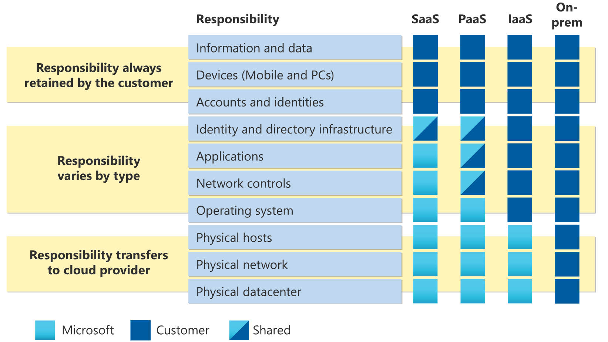- You’ll always be responsible for:
- The information and data stored in the cloud
- Devices that are allowed to connect to your cloud (cell phones, computers, and so on)
- The accounts and identities of the people, services, and devices within your organization
- The cloud provider is always responsible for:
- The physical datacenter
- The physical network
- The physical hosts
- Your service model will determine responsibility for things like:
- Operating systems
- Network controls
- Applications
- Identity and infrastructure
cloud models
Private Cloud: A private cloud is similar to a corporate datacenter but with the added benefit of cloud technologies. It's a cloud service dedicated to a single organization, offering more control for the company's IT team. However, private clouds are often more expensive and do not offer the same scalability or flexibility as public clouds. A private cloud can be hosted within your own data center or in a dedicated offsite facility, potentially managed by a third-party.
Public Cloud: A public cloud is owned and operated by a third-party provider, making cloud services available to anyone who wants to use them. These clouds are accessible to the general public, which sets them apart from private clouds. Public clouds are typically more cost-effective and offer greater scalability, but users have less control over the infrastructure.
Hybrid Cloud: A hybrid cloud combines both private and public clouds, enabling seamless integration between the two. This setup allows businesses to scale their private cloud with public cloud resources during peak demand. It also provides flexibility, letting organizations choose which workloads should stay in the private cloud for added security and which can move to the public cloud for cost efficiency.

Multi-cloud: In a multi-cloud setup, a company utilizes multiple cloud providers, often combining different services from each one. This can happen if the company uses features from several providers or is transitioning from one to another. The main idea is managing resources and security across two or more public cloud environments, giving businesses more flexibility and options for their cloud services.
Azure Arc: Azure Arc is a set of tools that help you manage and oversee your cloud resources, whether they are in a public cloud (like Azure), a private cloud in your own data center, a hybrid setup, or a multi-cloud environment with resources spread across different providers. It simplifies managing various cloud configurations from a single interface.
Azure VMware Solution: If you're already using VMware in a private cloud but want to take advantage of the scalability and flexibility of public or hybrid clouds, Azure VMware Solution allows you to run your VMware-based workloads in Azure. It integrates VMware seamlessly with Azure, making it easier to scale and manage workloads in the cloud.
consumption-based model
When comparing IT infrastructure models, there are two main types of costs to consider: CapEx and OpEx. CapEx is a one-time investment made to acquire or establish physical assets, such as purchasing land, constructing buildings, or setting up a data center. It's a large, upfront expenditure that results in ownership of the resources. In contrast, OpEx involves ongoing, recurring expenses for services or products. This includes costs like renting space, leasing equipment, or subscribing to cloud services. With OpEx, you pay for the use of something over time rather than owning it outright. Cloud computing follows the OpEx model because it’s based on how much you use. Instead of investing in physical infrastructure and managing it, you only pay for the cloud resources you consume, which can vary month to month depending on your needs. If you don’t use any services, there’s no cost for that period.
This consumption-based model has many benefits, including:
- No upfront costs.
- No need to purchase and manage costly infrastructure that users might not use to its fullest potential.
- The ability to pay for more resources when they're needed.
- The ability to stop paying for resources that are no longer needed.
In a traditional data center, you have to estimate how much resources you'll need in the future. If you overestimate, you'll end up spending more money than necessary on hardware that isn't fully used. If you underestimate, your data center may quickly run out of capacity, causing performance issues for your applications and services. Fixing this usually involves ordering and installing new hardware, along with adding power, cooling, and networking, which can be time-consuming.
With cloud computing, you don’t need to worry about getting your resource needs exactly right. If you need more virtual machines, you can add them easily. If the demand drops, you can remove them just as easily. You only pay for the virtual machines you use, so there's no need to worry about paying for unused "extra capacity" that cloud providers keep available.
Cloud computing involves accessing computing resources, like storage, processing power, and software, over the internet, rather than relying on local infrastructure. It uses a pay-as-you-go model, meaning you only pay for the services you actually use. This approach helps you:
- Plan and manage your operating costs.
- Run your infrastructure more efficiently.
- Scale as your business needs change.
Microsoft Defender XDR

Description: Microsoft Defender XDR is a powerful security tool designed to uncover and stop cyber threats across various parts of your IT environment—like emails, devices, apps, and user identities. It pieces together the details of an attack, giving you a clear picture of how it started, spread, and impacted your systems. This deeper understanding helps you take swift action to fix the issue and strengthens your defenses against similar attacks in the future.
Example:
see the attacker activity visible to each Microsoft Defender XDR product.

This diagram demonstrates how Microsoft Defender and its associated security solutions work together to protect organizations from both external threats and insider risks throughout the attack chain. Below is a detailed breakdown:
-
External Threats (originate from outside the organization):
-
Defender for Office 365:
- Detects phishing attempts and blocks malicious emails.
- Prevents threats such as opening malicious attachments, clicking harmful URLs, and browsing compromised websites.
-
Defender for Endpoint:
- Protects devices from exploitation and malware installation.
- Detects and disrupts command and control (C2) communication.
-
Defender for IoT (and OT):
- Secures IoT devices and operational technology systems.
- Prevents IoT device exploitation and disruption of critical infrastructure.
-
Microsoft Defender for Cloud: Monitors and protects cloud environments by detecting threats and misconfigurations.
-
-
Identity-based Attacks (target user accounts):
-
Microsoft Entra ID Protection:
- Defends against brute force attacks and stolen credentials.
-
Defender for Identity:
- Identifies compromised accounts and suspicious behaviors.
- Monitors lateral movement as attackers search for high-value targets.
-
Defender for Cloud Apps:
- Tracks reconnaissance activities and configuration data collection.
- Protects sensitive data from unauthorized access or exfiltration.
- Detects domain compromises and privileged account abuse.
-
-
Insider Risks (come from within the organization):
-
Microsoft Purview Insider Risk Management:
- Monitors insider behaviors, such as careless actions or intentional sabotage.
- Identifies indicators like a history of violations, distraction, or disgruntled employees.
- Detects sensitive data access, anomalous activity, and potential sabotage.
-
-
Microsoft Sentinel (Central Hub):
- Acts as a centralized platform for threat detection and response.
- Correlates insights from various tools to provide a complete attack overview.
- Automates threat detection and enables proactive defense strategies.
How Extended Detection and Response (XDR) works
-
Simplified Explanation:
XDR works by gathering information from different areas like endpoints, user identities, emails, and applications. It analyzes these signals together to spot and stop threats effectively.
-
Focus on Integration:
Extended Detection and Response (XDR) integrates data from endpoints, identity systems, email platforms, and applications. This unified approach helps detect malicious activity and take action to prevent harm.
-
Threat-Centric View:
To combat threats efficiently, XDR pulls data from multiple sources—endpoints, identity systems, emails, and apps. By analyzing these signals collectively, it provides a clearer picture of suspicious activity and enables swift mitigation.
-
Holistic Protection:
XDR brings together security insights from endpoints, identity tools, email systems, and applications. This consolidated view helps identify threats faster and respond to them across different parts of the IT environment.
-
Step-by-Step Process:
- XDR collects signals from:
- Devices (endpoints)
- User accounts (identity)
- Communication tools (email)
- Software platforms (applications)
- It then analyzes these signals as a whole to detect, understand, and neutralize security threats.
-
Real-World Analogy:
Think of XDR as a security control room. It monitors activity across your devices, user accounts, emails, and software, piecing together clues from all these areas to identify and stop threats before they spread.
-
Tech-Oriented Approach:
Extended Detection and Response merges data streams from endpoints, identities, emails, and apps. Using advanced analytics, it detects patterns that indicate potential threats and coordinates mitigation across all these layers.
Explore Microsoft Defender XDR's Role in a Security Operations Center (SOC)
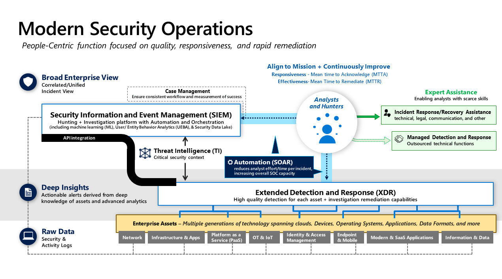Broad Enterprise View:
Correlated/Unified Incident View: This refers to having a consolidated view of security incidents across different systems and tools. This helps analysts see the bigger picture and respond more effectively.
Case Management:
Ensures consistent workflow and measurement of success. This involves managing incidents from detection to resolution, tracking progress, and analyzing outcomes to improve future responses.
Analysts and Hunters:
- Analysts: These individuals are responsible for monitoring security systems, responding to alerts, and investigating incidents.
- Hunters: These are more proactive security professionals who actively search for threats within the environment.
Security Information and Event Management (SIEM):
This platform collects, analyzes, and correlates security data from various sources. It provides valuable insights for threat detection and incident response.
Hunting, Investigation Platform with Automation and Orchestration:
This includes technologies like machine learning (ML), User/Entity Behavior Analytics (UEBA), and a security data lake. These tools help automate tasks, identify anomalies, and accelerate investigations.
Threat Intelligence (TI):
This provides critical security context by gathering information on threats and vulnerabilities. It helps organizations stay informed and proactively defend against attacks.
Automation (SOAR):
This reduces analyst effort and time per incident, increasing the overall capacity of the security operations center (SOC). Automation streamlines repetitive tasks and frees up analysts to focus on more complex issues.
Extended Detection and Response (XDR):
Provides high-quality detection and investigation capabilities for each asset. XDR combines multiple security technologies to deliver a more comprehensive and integrated approach to threat detection and response.
Enterprise Assets:
This encompasses a wide range of assets, including various technologies, devices, operating systems, applications, data formats, and more. Modern security operations need to consider the diverse landscape of assets to protect them effectively.
Raw Data and Deep Insights:
Raw Data:
This is the foundation of security operations, encompassing security activity logs, network traffic, and various other data sources.
Deep Insights:
Advanced analytics techniques like machine learning and AI are applied to this raw data to extract valuable insights. These insights can include identifying anomalies, detecting threats, and understanding the overall security posture.
Automation and Orchestration (SOAR):
SOAR automates routine security tasks, such as incident response, threat hunting, and vulnerability management.
By automating these tasks, SOAR frees up security analysts to focus on more strategic and complex activities.
Security Operations Model - Functions and Tools
In security operations, responsibilities are typically divided among various individuals and teams, depending on factors like the organization's size and structure. Each team or function focuses on a specific area of security while working closely with others and external groups to ensure efficiency. In an ideal scenario, these roles are filled by dedicated, fully staffed teams. However, in smaller organizations, these roles are often merged into a single team or individual, with technical tasks handled by IT operations and leadership taking on roles like incident management temporarily.
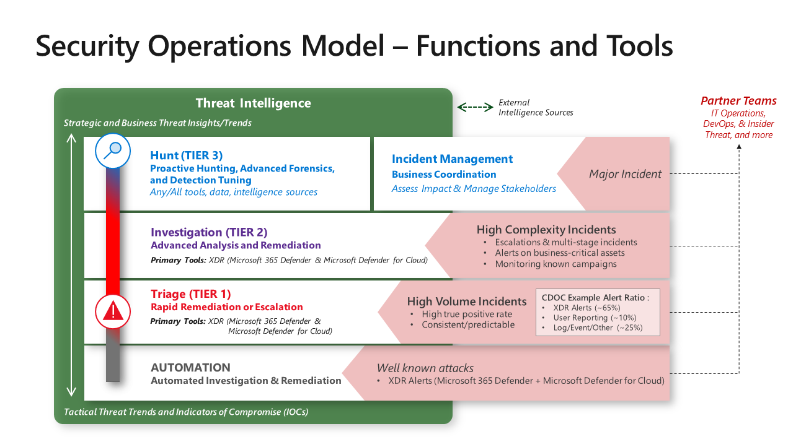1. Threat Intelligence
- Strategic and Business Threat Insights/Trends: This level focuses on high-level threat information, such as emerging trends, industry-specific threats, and strategic insights.
- Tactical Threat Trends and Indicators of Compromise (IOCs): This level deals with more specific and actionable threat information, such as IOCs, TTPs, and alerts related to known attacks.
2. Hunt and Incident Management (Tier 3)
- Proactive Hunting, Advanced Forensics, and Detection Tuning: This tier involves proactive threat hunting, advanced forensic analysis, and fine-tuning detection mechanisms.
- Any/All Tools, Data, Intelligence Sources: This tier leverages a wide range of tools, data sources, and intelligence to identify and investigate potential threats.
- Multi-Disciplinary Focus: This team is composed of various specialists, all working together to identify attackers who may have bypassed traditional detection methods and respond to significant incidents that could impact the business.
- Hunt: The team takes a proactive approach, searching for threats that have not been detected through standard methods. They also assist with more complex investigations, providing advanced forensic analysis for cases that have been escalated. Additionally, they continuously improve the detection and automation processes. Unlike reactive teams, the Hunt team works with hypotheses to guide their search for threats, and they are the bridge between red/purple teams and security operations.
3. Investigation and Incident Management (Tier 2)
- Advanced Analysis and Remediation: This tier focuses on in-depth analysis of identified threats, determining their impact, and implementing remediation measures.
- Primary Tools: XDR (Microsoft 365 Defender & Microsoft Defender for Cloud) are used for advanced threat detection and response capabilities.
- Role of the Team: This team acts as the next step for issues that need further attention from the Triage (Tier 1) team. They focus on more advanced alerts, such as those indicating sophisticated attackers. These include behavioral anomalies, alerts related to critical business assets, and tracking ongoing attack campaigns. In addition to responding to alerts, this team also reviews the Triage team’s queue and actively hunts for threats using XDR tools when they have extra capacity.
- Investigation Focus: Their role is to conduct in-depth investigations into a smaller number of more intricate attacks, which are often multi-stage operations carried out by skilled attackers. They also pilot new alert types and document procedures for the Triage team and automation tools. This often involves working with alerts from Microsoft Defender for Cloud, covering areas like cloud-hosted applications, virtual machines, containers, Kubernetes, and SQL databases.
- Incident Management: The Incident Management team is responsible for the administrative side of incident handling. They coordinate efforts with other departments such as communications, legal, leadership, and relevant business stakeholders to ensure proper incident resolution.
4. Triage and Automation (Tier 1)
- Rapid Remediation or Escalation: This tier handles high-volume incidents and determines whether they require immediate remediation or escalation to higher-level teams.
- Primary Tools: XDR (Microsoft 365 Defender & Microsoft Defender for Cloud) are used for rapid incident response and triage.
- True Positive Rate: Aiming for a 90% true positive rate ensures that security analysts are not overwhelmed by false alarms. This allows them to focus on genuine threats rather than wasting time on irrelevant alerts.
- Alert Sources: Based on Microsoft's experience in their Cyber Defense Operations Center, the majority of high-quality alerts come from XDR tools, with the rest originating from user-reported issues, traditional log-based alerts, and other data sources.
- Tool Integration: A key factor in improving response times at Microsoft’s Cyber Defense Operations Center is the integration of various XDR tools into a unified platform. Microsoft Defender XDR combines endpoint, email, identity, and other tools into a single interface, allowing analysts to quickly identify and neutralize threats such as phishing emails, malware, and compromised accounts before they escalate.
- Team Focus: Security teams concentrate their efforts on a limited set of technical areas and scenarios to maintain quick response times. This often involves prioritizing tasks related to user productivity, such as addressing email threats, antivirus alerts, and handling initial responses to user reports.
5. Automation
- Automated Investigation & Remediation: Automation is used to streamline routine tasks, such as incident response and remediation, freeing up security analysts to focus on more strategic activities.
- XDR Alerts: Automation leverages alerts from Microsoft 365 Defender and Microsoft Defender for Cloud to trigger automated responses.
6. Incident Management
- Business Coordination: This involves coordinating with business stakeholders to assess the impact of incidents, communicate updates, and manage expectations.
- Major Incident: This tier handles high-complexity incidents that require significant resources and coordination.
7. Partner Teams
- IT Operations, DevOps, Insider Threat, and More: Collaboration between security teams and other relevant teams within the organization is crucial.
- External Intelligence Sources: Leveraging external threat intelligence sources helps stay informed about emerging threats.
the model emphasizes:
- A Tiered Approach: Prioritizing incidents based on their severity and complexity.
- Proactive Threat Hunting: Actively seeking out threats rather than just reacting to alerts.
- Automation: Streamlining routine tasks to improve efficiency.
- Collaboration: Effective communication and coordination between security teams and other stakeholders.
- Leveraging Advanced Tools: Utilizing XDR tools for advanced threat detection and response.
How It Comes Together
- Triage (Tier 1): An analyst picks up a malware alert from the queue and starts investigating, typically using tools like Microsoft Defender XDR. Most cases are quickly handled and closed, but in this instance, the analyst identifies that the malware requires a more thorough response, such as isolating the device and performing a detailed cleanup. Recognizing this need, the Triage analyst escalates the case to the Investigation (Tier 2) team, who takes over the lead role in resolving the incident. The Triage team may continue to be involved and learn more during this phase, with the Investigation team possibly utilizing a broader tool like Microsoft Sentinel or another SIEM for a more comprehensive view of the situation.
- Investigation (Tier 2): The Investigation team verifies the initial findings and digs deeper if necessary. Once they confirm the cause and resolve the issue, they proceed with remediation and close the case.
- Hunt (Tier 3): At a later stage, the Hunt team might review closed incidents to look for patterns or unusual activity that could warrant further investigation. They may identify trends like detections eligible for automatic remediation, clusters of similar incidents suggesting a shared cause, or areas where processes, tools, or alerts can be improved. For instance, after reviewing the closed case, the Hunt team discovered that the user had fallen for a tech scam, allowing scammers to gain administrative access to the endpoint. This finding prompted the Hunt team to elevate the case to a higher priority, given the increased risk exposure.
Threat intelligence

Threat Intelligence
The Threat Intelligence team plays a critical role by offering valuable context and insights to enhance various other security functions within an organization. This team often utilizes a Threat Intelligence Platform (TIP) in larger setups, and their responsibilities typically encompass the following:
- Reactive Research: They conduct technical investigations to support ongoing incidents, helping to understand the nature and scope of active threats.
- Proactive Research: They track and analyze trends related to attacker groups, emerging attack techniques, and high-profile incidents, preparing for potential future threats.
- Strategic Insights: The team provides high-level analysis and research to guide both business and technical decision-making, ensuring that security priorities align with organizational goals.
- Other Support: They also contribute to various other activities related to threat identification, reporting, and prevention across the organization.
The Threat Intelligence team is instrumental in gathering and providing insights that inform various other cybersecurity operations. By using platforms like TIPs, they deliver essential intelligence in both reactive and proactive contexts, including:
- Incident Support: Reacting to live incidents with technical research to better understand the current attack and mitigate its impact.
- Threat Monitoring: Continuously tracking evolving attack strategies, known threat actors, and trending security challenges.
- Strategic Research: Offering long-term, business-relevant insights to guide decision-making and help prioritize security initiatives.
- Additional Roles: They also perform a variety of other functions to keep the security landscape well-informed and prepared for emerging threats.
MITRE ATT&CK
Description: The MITRE ATT&CK framework is a comprehensive and continuously updated tool that details the various strategies, methods, and actions used by cyber attackers. It provides cybersecurity professionals with a clear and organized approach to understanding how threats work, helping them detect, analyze, and respond to attacks more effectively and with greater insight.
The ATT&CK framework organizes different attack strategies into matrices designed for specific environments, like enterprise networks, mobile devices, or cloud platforms. Each matrix connects the attacker's goals (the tactics) with the methods (the techniques) they use to reach those goals, all tied to specific actions and behaviors (TTPs). This structure helps security teams better understand and anticipate potential attacks, enabling them to respond more effectively.
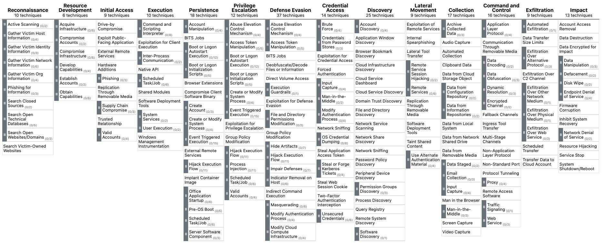MITRE ATT&CK Use Cases for Security Operations
The MITRE ATT&CK framework is a valuable tool for understanding how attackers operate. It supports security operations in several key areas:
Detection and Response
The framework helps security teams identify attacker tactics and techniques, enabling them to create effective detection strategies and respond swiftly to threats.
Security Gap Analysis
Organizations can use the framework to evaluate their defenses, uncover weaknesses, and focus on improving critical areas to better protect against attacks.
SOC Maturity Assessment
The framework provides a method to measure the effectiveness of a Security Operations Center (SOC), highlighting areas where improvements are needed for enhanced threat detection and response.
Threat Intelligence Enhancement
By standardizing the way adversary behaviors are described, the framework improves threat intelligence sharing within teams and with external partners, leading to better collaboration.
Cyber Threat Context
ATT&CK enriches cyber threat intelligence by providing context on attacker methods, targets, and indicators of compromise, allowing for more informed decisions.
Behavioral Analytics
Mapping attacker techniques to observed behaviors enables organizations to create analytics models that detect unusual activities indicative of threats.
Red Teaming
Security teams can use the framework to simulate real-world attacks during red team exercises, helping to assess and strengthen defensive capabilities.
Training and Development
The framework serves as a comprehensive training resource for security professionals, keeping them up-to-date with the latest adversarial tactics and methods.
Our First Dashboard & Visualization 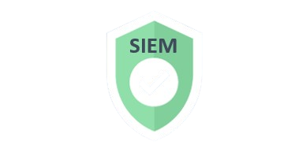
Description: Dashboards in SIEM systems act as frameworks that hold various visualizations, enabling us to structure and present data in an insightful and organized manner.
1. Create a new Dashboard
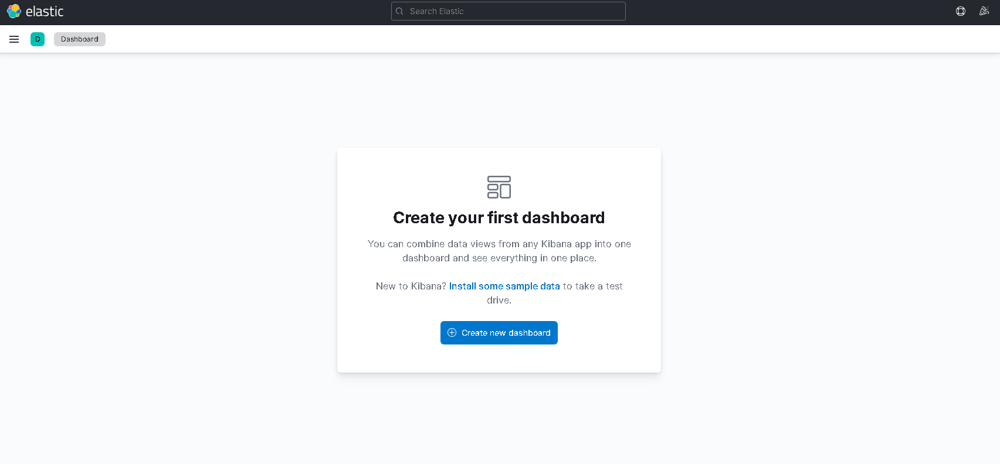2. Create a new visualization.
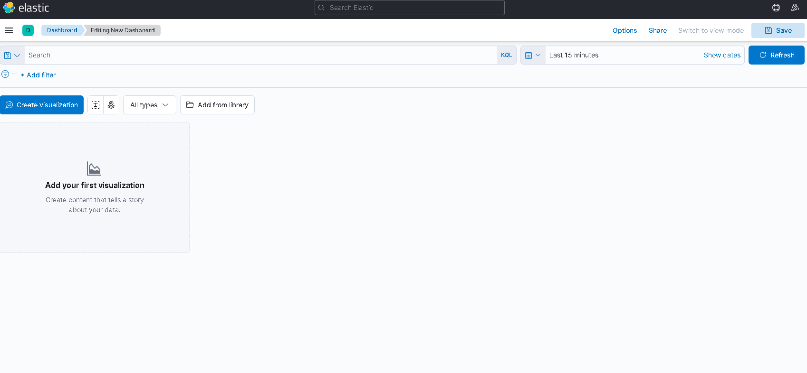When we begin creating our first visualization, a new window will open, offering various options and settings to choose from.
Important:Before configuring anything, we should first click the calendar icon to access the time picker. Next, we need to set the date range to "last 15 years." Once that's done, we can click the "Apply" button to apply the selected date range to the data.

This window offers four key elements to explore. One of the most important features is the filtering option, which allows us to refine the data before creating a graph.
- 1. Filtering option: Customize the data to match specific criteria before visualization.
- Focus on event ID 4625 for failed logon attempts.
For example, if we want to focus on failed login attempts, we can set a filter to include only events with the specific ID 4625, which represents failed logon attempts on a Windows system. The image below demonstrates how such a filter can be applied.
This field represents the data set (index) that will be used. Typically, data from various infrastructure sources is organized into separate indices, such as network, Windows, or Linux.
In this example, we will define windows* as the value for the "Index pattern" to focus specifically on Windows-related data.
- Purpose: Select the appropriate data set to analyze.
- Example: Use
windows*to capture data from Windows systems.
The search bar enables us to verify the presence of a specific field within our data set, acting as a helpful tool to ensure we're analyzing the correct data.
For instance, if we are interested in the user.name.keyword field, we can use the search bar to check if this field exists and has been detected in the selected data set. This process confirms that we are accessing the right field and working with precise data.
- Function: Double-check the availability of specific fields.
- Example: Search for
user.name.keywordto verify its existence.
Why use
instead of
You might wonder. The answer lies in how aggregations work. When performing aggregations, it is recommended to use the .keyword version of the field.
For a more detailed explanation, you can check out this related discussion on Stack Overflow. https://tinyurl.com/aggregationssiem
The Stack Overflow discussion explores the difference between fields and the Field class in Java. Here's a brief explanation:
- Fields: These are variables declared within a class, used to store data. They can be primitive types (e.g., int, boolean) or reference types (e.g., objects of other classes).
- Field class: Java doesn't have a "Field" keyword, but it includes a Field class in the java.lang.reflect package. This class is part of Java's reflection API and allows dynamic inspection and modification of class fields at runtime.
The key distinction is that fields are fundamental components of a class, while the Field class is a specialized tool for performing runtime operations like accessing or altering fields dynamically.
For Example:
and
Another interesting read would be this link: https://tinyurl.com/Textvskeyword
Finally, this drop-down menu lets us choose the type of visualization we want to create. The default option shown in the previous image is "Bar vertical stacked".
Clicking on this button will reveal additional options (the image has been redacted as not all options are visible on the screen). From this expanded list, we can select the visualization type that best suits our needs and data presentation goals.
For this visualization, we will pick the "Table" option. Once we've selected "Table", the next step is to click on the "Rows" option.
This allows us to specify which data elements we want to display within the table format.
Let's configure the "Rows" settings as follows.
Note: You might see "Rank by Alphabetical" instead of "Rank by Count of records" as shown in the earlier screenshot. This is completely fine. Once you proceed with the next configuration, the option to rank by "Count of records" will become available.
in the "Metrics" window, let's select "count" as the desired metric.
Once we choose "Count" as the metric, we will see the table fill with data, provided there are events available in the selected data set.
The last step in customizing the table is to add another "Rows" setting to display the machine where the failed logon attempt took place. To achieve this, we will choose the host.hostname.keyword field, which indicates the computer that logged the failed attempt. This will enable us to show the hostname or machine name alongside the count of failed logon attempts, as demonstrated in the image.
Now, the table displays three columns with the following details:
- The usernames of individuals attempting to log in (Note: Currently, both user and computer accounts are shown. Ideally, a filter should be applied to exclude computers and display only users).
- The machine where the logon attempt took place.
- The count of how many times the event occurred, based on the selected time frame or the entire data set, depending on the configuration.
Finally, click on "Save and return", and you’ll see the new visualization added to the dashboard, as illustrated in the next image.
Let's not forget to save the dashboard as well. We can do so by simply clicking on the "Save" button.
let's refine the visualization
Let's now click on the "gear" button at the upper-right corner of our visualization, and then click on "Edit lens".
Top values of user.name.keyword" should be changed as follows
Top values of host.hostname.keyword" should be changed as follows
The "Logon Type" can be added as follows (we will use the winlog.logon.type.keyword field)
Count of records" should be changed as follows.
We can introduce result sorting as follows
All we have to do now is click on "Save and return"
The DESKTOP-DPOESND, WIN-OK9BH1BCKSD, and WIN-RMMGJA7T9TC usernames can be excluded by specifying additional filters as follows.
Computer accounts can be excluded by specifying the following KQL query and clicking on the "Update" button
The AND winlog.channel.keyword: Security part is to ensure that no unrelated logs are accounted for.
This is our visualization after all the refinements we performed.
Finally, let's give our visualization a title by clicking on "No Title"
Don't forget to click on the "Save" button (the one on the upper-right hand side of the window)
Failed Logon Attempts (Disabled Users)
A prebaked dashboard should be visible. Let's click on the "pencil"/edit icon.
To start building our first visualization, just click the "Create visualization" button.
When you begin creating your first visualization, a new window will open, presenting a range of options and settings for customization.
In this window, there are four key elements to focus on:
- 1: A filter option that lets us narrow down the data before generating a graph. For instance, our goal here is to showcase failed logon attempts specifically targeting disabled users. To achieve this, we can set up a filter that includes event IDs corresponding to 4625—representing failed logon attempts on Windows systems, similar to what we did in the previous visualization. However, in this scenario, we also need to factor in the SubStatus field (winlog.event_data.SubStatus), which should be set to 0xC0000072 to indicate that the logon failure is due to a disabled user. The image below illustrates how to configure this filter.
- 2: This field determines the dataset, or index, that will be utilized. Data from different infrastructure components is often organized into distinct indices, such as those for network activity, Windows systems, Linux systems, and so on. For this example, we’ll define windows* in the "Index pattern" to focus on Windows-related data.
- 3: The search bar allows us to verify whether a specific field exists within our dataset. It serves as a useful tool to ensure we're examining the right data. For instance, similar to the previous visualization, we are focused on the user.name.keyword field. By using the search bar, we can quickly check if this field is available and identified within the chosen dataset. This step helps confirm that we're accessing the correct field and working with reliable data.
- 4: Finally, this drop-down menu allows us to choose the type of visualization we wish to create. The default setting, as shown earlier, is "Bar vertical stacked." By clicking on this menu, a list of additional visualization options will appear (not fully shown in the image due to screen size). From this list, we can select the visualization style that best matches our data and presentation goals.
We’ll begin by choosing the "Table" option. Once it’s selected, we can move on to click the "Rows" option. This step enables us to specify the particular data elements we want to display in the table view.
Let's configure the "Rows" settings as follows.
To enhance the table further, we can add another "Rows" setting to display the machine where the failed logon attempt took place. For this, we’ll select the host.hostname.keyword field, which identifies the computer that reported the failed logon. This addition will let us show the hostname or machine name alongside the number of failed logon attempts.
The table now displays three columns, each providing the following details:
- The disabled user whose credentials triggered the failed logon attempt.
- The machine where the logon attempt was made.
- The frequency of these events, calculated based on the selected time frame or the entire dataset, depending on the configuration.
To finish, click on "Save and return," and you’ll see the newly created visualization added to the dashboard.
1: What is the logon type indicated in the returned document for failed logon attempts involving disabled users?
I would add the search field name to the row: winlog.logon.type.keyword
2: What should you specify after user.name: in the KQL query to include failed logon attempt data where the username field contains the keyword "admin" anywhere within it?
I would add this KQL query: user.name: *admin*
Successful RDP Logon Related To Service Accounts
Our goal is to develop a visualization that tracks successful RDP logins, specifically for service accounts. In typical corporate or real-world settings, service account credentials are not utilized for RDP logins,all service accounts on the environment start with svc-.
A prebaked dashboard should be visible. Let's click on the "pencil"/edit icon.
To start building our first visualization, just click the "Create visualization" button.
When you begin creating your first visualization, a new window will open, presenting a range of options and settings for customization.
In this window, there are five key elements to focus on:
1: We need a filter option to refine the data before generating a graph. Our objective is to visualize successful RDP logins that are specifically associated with service accounts. To achieve this, we can filter for event IDs corresponding to 4624 – "An account was successfully logged on." Additionally, we must consider the logon type, which should be RemoteInteractive (found in the winlog.logon.type field). The following images show how we can apply these filters.
This field specifies the data set (index) we plan to use. Typically, data from different infrastructure sources is stored in separate indices, such as network, Windows, Linux, etc. For this example, we will set the "Index pattern" to windows*.
The search bar allows us to verify the presence of a specific field in our data set, providing an additional method to ensure we are working with the correct data. In this case, we are focusing on the user.name.keyword field. By using the search bar, we can quickly check if this field is available and recognized within the chosen data set, confirming that we are accessing the right field and using accurate data.
Finally, this drop-down menu lets us choose the type of visualization to create. The default option shown in the previous image is "Bar vertical stacked." Clicking on this button will display more available options (the image has been redacted as not all options fit on the screen). From this extended list, we can select the visualization type that best aligns with our needs and how we want to present the data.
We’ll begin by choosing the "Table" option. Once it’s selected, we can move on to click the "Rows" option. This step enables us to specify the particular data elements we want to display in the table view.
Let's configure the "Rows" settings as follows.
The last step is to add two additional "Rows" settings to the table: one to display the machine where the successful RDP logon took place and the other for the machine that initiated the successful logon. To achieve this, we will select the host.hostname.keyword field, which identifies the machine reporting the logon, and the related.ip.keyword field, which represents the IP address of the machine that initiated the logon attempt. This will allow us to show the relevant machines along with the count of successful logon attempts, as illustrated in the image.
We aim to track successful RDP logins specifically associated with service accounts, with the understanding that all service account names in the environment begin with "svc-
Note: As you can see we don't use the .keyword field in KQL queries.
The table now displays four columns, each providing the following details:
- The service account responsible for the successful RDP logon event.
- The machine where the logon attempt took place.
- The IP address of the machine that initiated the logon attempt.
- The count of occurrences of the event (based on the selected time period or the entire data set, depending on the settings).
Afterward, click "Save and return," and you will see the newly created visualization added to the dashboard.
Users Added Or Removed From A Local Group (Within A Specific Timeframe)
Our goal is to develop a visualization that tracks changes to the local "Administrators" group, specifically focusing on user additions or removals, from March 5th, 2023, to the present.
The visualization will be based on the following Windows event logs:
- 4732: A member was added to a security-enabled local group
- 4733: A member was removed from a security-enabled local group
A prebaked dashboard should be visible. Let's click on the "pencil"/edit icon.
To start building our first visualization, just click the "Create visualization" button.
When you begin creating your first visualization, a new window will open, presenting a range of options and settings for customization.
In this window, there are five key elements to focus on:
We have a filtering option that lets us refine the data before generating a graph. In this case, we aim to display changes involving user additions or removals from the local "Administrators" group. We can apply a filter to include only event IDs 4732 (member added to a security-enabled local group) and 4733 (member removed from a security-enabled local group). Additionally, we can filter the data further to focus specifically on these events where the local group in question is the "Administrators" group.
This field specifies the data set (index) we plan to use. Typically, data from different infrastructure sources is stored in separate indices, such as network, Windows, Linux, etc. For this example, we will set the "Index pattern" to windows*.
The search bar allows us to verify the presence of a specific field in our data set, providing an additional method to ensure we are working with the correct data. In this case, we are focusing on the user.name.keyword field. By using the search bar, we can quickly check if this field is available and recognized within the chosen data set, confirming that we are accessing the right field and using accurate data.
We’ll begin by choosing the "Table" option. Once it’s selected, we can move on to click the "Rows" option. This step enables us to specify the particular data elements we want to display in the table view.
Let's configure the "Rows" settings as follows.
The final step in enhancing the table is to add more "Rows" settings for a better understanding of the data:
- Which user was added or removed from the group? (using the winlog.event_data.MemberSid.keyword field)
- To which group was the action performed? (ensuring it’s the "Administrators" group) (using the group.name.keyword field)
- Was the user added or removed from the group? (using the event.action.keyword field)
- On which machine did the action take place? (using the host.name.keyword field)
As mentioned earlier, our goal is to track user additions or removals from the local "Administrators" group over a defined period, from March 5th, 2023, to the present
We can refine the focus of our visualization in the following ways.
What Is Alert Triaging?
Alert triaging is a process performed by a Security Operations Center (SOC) analyst where security alerts from monitoring systems are assessed and prioritized. The objective is to determine the threat level and potential impact of these alerts on an organization’s systems and data. The analyst reviews and categorizes the alerts, enabling the organization to allocate resources efficiently and take appropriate action in response to security incidents.
A key part of alert triaging is escalation. This involves notifying higher-level teams or individuals, such as supervisors or incident response units, who are authorized to make decisions and lead the response efforts. The SOC analyst provides detailed insights about the alert, including its severity and impact, along with findings from the preliminary investigation. This helps decision-makers determine the best course of action, such as involving specialized teams or initiating broader incident response procedures.
Escalation ensures that critical alerts are promptly addressed and allows for effective coordination between teams. This enables the organization to respond efficiently and in a timely manner to potential threats, leveraging the expertise of those responsible for managing and mitigating more complex or high-level incidents.
What Is The Ideal Triaging Process?
- Initial Alert Review:
Analyze the alert’s details such as timestamps, source/destination IPs, affected systems, and the rule/signature that triggered the alert. Investigate related logs to understand the full context of the alert.
- Alert Classification:
Use the organization’s established system to classify the alert based on its severity, potential impact, and urgency.
- Alert Correlation:
Compare the alert with other similar events or incidents to identify patterns, connections, or possible indicators of compromise (IOCs). Use SIEM systems and threat intelligence to gather more relevant data and cross-check known attack methods.
- Enrichment of Alert Data:
Enhance the alert by gathering additional data such as network packet captures, memory dumps, or analyzing suspicious files. Use external tools, intelligence sources, or sandboxes for further investigation of suspicious files or IP addresses.
- Risk Assessment:
Evaluate the possible risk to the organization’s critical assets, data, or infrastructure, considering compliance requirements and the sensitivity of the affected systems. Assess how likely a successful attack could be and the chances of further escalation within the network.
- Contextual Analysis:
Take into account the context of the affected assets, their importance, and the type of data they handle. Review the security measures in place to determine if the alert indicates a failure in controls or an attempt to bypass security. Ensure compliance and regulatory standards are considered in the context of the alert.
- Incident Response Planning:
For significant alerts, begin an incident response plan by documenting key details, including systems impacted, behaviors, and any gathered intelligence. Assign roles and responsibilities within the incident response team and coordinate with other relevant departments.
- Consultation with IT Operations:
Engage with IT or other departments to gather further context or missing information. Discuss whether any ongoing activities or system changes could explain the alert, and gain insights on potential non-malicious causes.
- Response Execution:
Based on the assessment and consultation, determine the appropriate response. If the alert is found to be non-malicious, resolve the issue without escalation. If it remains a security concern, initiate the necessary response actions.
- Escalation:
Identify escalation triggers based on the organization's policies and the alert's severity. Triggers may include critical system compromise, ongoing attacks, sophisticated techniques, or insider threats. Follow the internal escalation procedure and notify the appropriate teams or management. In some situations, escalate to external entities, like CERTs or law enforcement, if required by legal or regulatory standards.
- Continuous Monitoring:
Keep monitoring the situation, ensuring there’s ongoing communication with escalated teams. Collaborate for a well-coordinated response to the ongoing incident.
- De-escalation:
Once the risk is mitigated and the incident is under control, assess whether de-escalation is necessary. Notify relevant stakeholders of the resolution, sharing a summary of actions, outcomes, and any lessons learned. Periodically review and update the triaging and escalation processes to keep them in line with emerging threats and changing organizational needs.
Learning C
Description: I’m about to start learning C to enhance my ability to reverse engineer malware and analyze threats at a system level. This knowledge will be essential for my SOC career, allowing me to better understand how malware operates, detect IOCs and IOAs, and build more effective detection and response strategies. By mastering C, I aim to sharpen my skills in identifying vulnerabilities and dissecting malicious code to improve security operations.
The printf function supports special format specifiers, which allow to output numbers and output formatting
int main() {
printf("%d", 256);
return 0;
}
%d is the format specifier, which denotes that a whole number is expected
floating point numbers
%f is used to output floating point numbers
int main() {
printf("%f", 256);
return 0;
}
%c denotes a single character, while %s is used for strings
int main() {
printf("%c", 'G');
return 0;
}
Single characters need to be enclosed in single quotes, while strings use double quotes.
you can use a combination of multiple specifiers and text in the printf() function
int main() {
printf("Score: %f. Level: %d", 50.2, 2);
return 0;
}
Each format specifier in replaced by the corresponding value, provided to printf() separated by commas
add a new line after the output
the special character \n is used to create a new line in the output.
int main() {
printf("Name: %s\n", "Tobias");
printf("Age: %d", 51);
return 0;
}
Note: You can use as many \n characters as you need
key points:
- %d is for whole numbers
- %f is for floating point numbers
- %c is for single characters
- %s is for strings
Remember to provide the corresponding values for each specifier, separated by commas, \n is a special character used to insert a new line into the output
Variables
Description:A variable lets you store a value by assigning it to a name.
Each variable has a specific category, called its type, that determines what kind of data it can store. For example, a variable might store words or text, whole numbers, decimal values, or other kinds of information.
For Example
The int type is used to store whole numbers, which are numbers without any fractional or decimal parts. In programming, these are commonly referred to as integers.
Once we declare a variable, we can give it a value by using the = symbol, which is called the assignment operator.
We can display or print the value stored in our variable.
int main() { int = level level = , 204
printf("%d", level);
return 0;
}
We used the %d format specifier because score is an integer. The printf function then replaces %d with the value of score when displaying the output.
We can declare a variable and assign it a value at the same time, like this:
int main() { int level = 204
printf("%d", level);
return 0;
}
The value of a variable can be updated or changed multiple times while the program is running.
int main() { int level = 204 level = 404 printf("%d", level);
return 0;
}
Fundamentals of Generative AI
Description: Generative AI is a fascinating branch of artificial intelligence that focuses on creating content, such as text, images, music, or even videos. Understanding its fundamentals involves delving into concepts like machine learning, neural networks, and probability models.
language models
Generative AI runs on the magic of language models—specialized machine learning systems designed to understand and create human-like language. These models are the backbone of many tasks in natural language processing (NLP), such as:
- Analyzing Sentiment: Figuring out the tone or mood behind a piece of text, like identifying whether a review is positive or negative.
- Summarizing Content: Boiling down lengthy text into its most important points, making it easier to digest large amounts of information.
- Comparing Meaning: Checking how similar the ideas in different texts are, which is useful for tasks like plagiarism detection or matching user queries with relevant documents.
- Creating New Text: Writing original content that feels natural and human, such as generating articles, emails, or even dialogue for chatbots.
What makes these models so powerful is their ability to learn patterns and structures in language from vast amounts of data. They can understand context, adapt to various tasks, and even get better with fine-tuning for specific applications. While the underlying mathematics can be complex, you can build a strong understanding by focusing on their architecture and how they use training data to generate outputs.
Transformer models
Modern large language models leverage the transformer architecture, a revolutionary design that has reshaped how machines process and generate human language. Transformers enhance earlier methods by focusing on the relationships between words, enabling them to excel in tasks like generating meaningful, context-aware text. By training on massive datasets, these models learn to identify patterns, semantics, and the flow of natural language, allowing them to produce outputs that are often indistinguishable from human writing.
The architecture of transformers is built on two core components:
- Encoder Block: This component processes the input text and converts it into a detailed semantic representation. It captures the context and meaning of the text, making it easier for the model to understand complex language structures.
- Decoder Block: Using the encoded information, this component generates new text sequences by predicting the next word or phrase, ensuring the output aligns with the input's context and style.
What makes transformers particularly powerful is their ability to handle large-scale parallel computations. Unlike earlier models, they use a mechanism called self-attention, which allows them to focus on relevant parts of the input while generating responses. This capability not only boosts their efficiency but also makes them highly adaptable to a wide range of NLP tasks, from summarization and question-answering to translation and creative writing.
As these models continue to evolve, they are becoming even better at understanding nuanced language, cultural references, and user intent, further blurring the lines between human and machine communication.

This diagram illustrates the process of how a transformer-based model processes and generates text. Let me explain the steps shown in the image:
- Input Documents (Step 1): The process starts with input documents or text data. This could be a sentence or a collection of text, which the model will process to generate a meaningful output.
- Encoder (Step 2): The encoder block takes the input data (text) and converts it into a semantic representation. It breaks down the text and captures the relationships between words, creating a vector representation for each word or token (e.g., "dog", "cat", "puppy"). These representations help the model understand the meaning and context of the words in the input.
- Semantic Representation (Step 3): The encoder outputs a set of vectors representing the words and their relationships in the text. In the diagram, these vectors are associated with words like "dog", "cat", and "puppy", each having a vector representation (e.g., [10, 3, 2] for "dog").
- Decoder (Step 4): The decoder block takes the semantic representations from the encoder and generates the output text. The decoder uses the encoded information to predict the next word or token in the sequence, generating text step by step.
- Output Text (Step 5): Finally, the decoder produces the output text, which is a continuation or transformation of the original input. In this case, the output is "… a puppy", which is the model's generated text based on the input "When my dog was…".
In essence, the encoder processes the input and creates a representation of its meaning, while the decoder uses that representation to generate new text that logically follows from the input. This is how transformer models are able to handle tasks like translation, text generation, and more.
In real-world applications, different versions of the transformer architecture are tailored to meet specific needs. For instance, Google's Bidirectional Encoder Representations from Transformers (BERT) model, designed to enhance search engine performance, relies solely on the encoder block. BERT is optimized for understanding context from both directions—left and right—of a given word in a sentence, which makes it excellent for tasks like question answering and sentence classification.
On the other hand, OpenAI's Generative Pretrained Transformer (GPT) model focuses on generating human-like text and uses only the decoder block. This setup allows GPT to generate text sequentially, predicting the next word based on the context provided by the previous words. While both models are based on transformers, their different architectures reflect their specialized purposes: BERT for understanding text and GPT for generating text.
This flexibility in transformer architectures enables them to be adapted for various tasks, whether it's analyzing text for deeper meaning or producing coherent and creative outputs.
Tokenization
Tokenization is the initial process when training a transformer model. It involves breaking down the input text into smaller units known as tokens. Essentially, this step identifies each distinct value or component within the text. For simplicity's sake, you can think of a token as being a unique word in the text. However, in practice, tokens can also represent parts of words, whole phrases, or even combinations of words and punctuation marks.
This step is crucial because it converts raw text into manageable units that the model can process. By splitting the text into tokens, the model can understand and analyze individual pieces of information, enabling it to learn patterns and relationships between words, parts of words, and other language features.
Let's take a different example to explain tokenization. Consider the sentence:
She enjoys reading books in the library every afternoon.
To tokenize this sentence, we break it down into smaller, meaningful units (tokens). Each distinct word or component is assigned a unique identifier. For instance:
- She (1)
- enjoys (2)
- reading (3)
- books (4)
- in (5)
- the (6)
- library (7)
- every (8)
- afternoon (9)
In this example, we assign a unique token ID to each word. This allows the transformer model to process the text step by step, learning the relationships between these words. While tokenization here involves straightforward words, in more advanced cases, it might include subword units, punctuation marks, or even whole phrases to better capture language nuances.
PicoCtf: Web Exploitation (NoSql)
Description: NoSQL injection is a vulnerability where an attacker is able to interfere with the queries that an application makes to a NoSQL database. NoSQL injection may enable an attacker to: - Bypass authentication or protection mechanisms. - Extract or edit data. - Cause a denial of service. - Execute code on the server. NoSQL databases store and retrieve data in a format other than traditional SQL relational tables. They use a wide range of query languages instead of a universal standard like SQL, and have fewer relational constraints.
Challenge Approach: Can you try to get access to this website to get the flag?
Info: We have this login interface, but we need to bypass it. They also provided us with a file named server.js. Once inside this file, we can see information that we can use. For example, there is an email that we will use. We are interacting with a mongodb-memory-server.
Info: We can also see that there is a filter for the email input and password input, which we will look into later.
Info: Let's use this email. We don't know the password yet, so we are going to get an error first.
Let's explore possible payloads we can use for the password. Once we find one that works for the password input, I'll use this: {"$ne": null}.
Description: When you use {"$ne": null} in a MongoDB query, you're asking the database to return documents where the field being queried does not have a value of null.
Let's use Burp Suite for this. When we use {"$ne": null}, we get this error: {"success": false, "error": "password.startsWith is not a function"}. This is what I was talking about—the possible filter we saw in the image above, where the email starts or ends with { or }, and the same applies to the password. We need to bypass this by using \, like this: {\"$ne\": null}. As you can see, we were able to log in without a password and bypassed the login page. Now, for this challenge, the token key is the flag, which is encoded in base64. So, we decode it and get the flag.
Threat Hunting & Hunting With Elastic
Description: Threat Hunting & Hunting with Elastic combines proactive cybersecurity techniques with advanced analytical tools to detect and mitigate potential threats. Threat hunting involves security teams actively searching for hidden threats within a network, rather than relying solely on automated alerts. By analyzing data, identifying anomalies, and leveraging threat intelligence, security professionals can uncover malicious activity early, reducing the risk of significant damage. Hunting with Elastic enhances this process by utilizing the Elastic Stack—including Elasticsearch, Kibana, and Elastic Security—to efficiently search and analyze large volumes of data in real-time. This powerful platform allows for custom detection rules, quick identification of suspicious patterns, and seamless integration of threat intelligence, making it an ideal solution for effective and data-driven threat hunting. Together, threat hunting and Elastic's tools provide organizations with a proactive, efficient, and scalable approach to improving cybersecurity and staying ahead of evolving cyber threats.
In the realm of cybersecurity, one of the most pressing concerns is dwell time, the period between when an attacker breaches a system and when it’s detected. Alarmingly, this window can last for weeks or even months, allowing attackers to roam freely within a network, gather sensitive data, and potentially cause irreversible damage before they're discovered. This extended timeframe highlights the significant risks organizations face when relying solely on traditional security measures, such as firewalls, antivirus software, and intrusion detection systems (IDS).
These traditional methods often focus on preventing attacks from happening in the first place or detecting them after the fact. However, as cyber threats grow more sophisticated, attackers can bypass these defenses by using techniques like fileless malware, social engineering, and zero-day vulnerabilities. This makes it more difficult to detect and mitigate threats quickly.
To address this growing problem, threat hunting has emerged as a crucial practice. Instead of waiting passively for alerts from existing security systems, threat hunting is a proactive approach where security teams actively search for hidden threats in their networks. By analyzing data, monitoring network traffic, and reviewing unusual patterns of behavior, threat hunters can uncover potential intrusions that might have slipped past traditional defenses.
What makes threat hunting so effective is that it focuses on human intuition and expertise, often using advanced analytics and threat intelligence. This offensive strategy enables teams to anticipate the moves of cybercriminals, understand their tactics, and detect anomalies before they escalate into full-blown security breaches.
In essence, threat hunting represents a shift in mindset—from merely defending against attacks to actively hunting for them. It’s a preemptive strategy that not only improves an organization’s ability to detect breaches faster but also strengthens its overall security posture by continually evolving to outsmart cyber adversaries. By prioritizing proactive security, organizations can reduce the risk of long-term damage, shorten detection times, and ultimately build more resilient defenses against the growing landscape of cyber threats.
Threat hunting is a proactive, hands-on approach where security professionals actively seek out potential threats within a network, instead of waiting for alerts from automated systems. It’s a methodical process aimed at identifying advanced, hidden threats that might bypass existing defenses, including those that might go unnoticed by external organizations like law enforcement.
The primary goal of threat hunting is to minimize the amount of time an attacker remains undetected in a system, commonly known as "dwell time." By identifying malicious activity early in the attack cycle, security teams can prevent attackers from gaining deep access to critical systems and take swift action to remove them.
The hunting process starts with identifying key assets—critical systems or sensitive information—that could be targeted by attackers. Next, threat hunters analyze the likely behaviors and strategies of attackers using current threat intelligence, focusing on the specific techniques and methods they might use. From there, the team actively searches for indicators of these tactics and any unusual activity that diverges from normal operations.
Throughout the process, threat intelligence is a crucial resource that helps inform hunting strategies, develop counteractions, and implement measures to defend against attacks. By combining human insight with up-to-date intelligence, threat hunting becomes an essential tool in protecting an organization's infrastructure.
Key elements of threat hunting include:
- A proactive, offensive approach that focuses on anticipating potential threats through hypotheses, attacker tactics, techniques, and procedures (TTPs), as well as intelligence.
- An offensive, reactive method that investigates the network for evidence of a verified incident, based on collected data and intelligence.
- A strong, practical understanding of the current threat landscape, including knowledge of cyber threats, adversarial TTPs, and the stages of the cyber kill chain.
- Empathy with the attacker’s mindset, aiding in a deeper understanding of how adversaries think and operate.
- A comprehensive knowledge of the organization’s IT infrastructure, network design, critical assets, and what constitutes normal activity.
- Effective use of high-quality data and tactical analytics, as well as utilizing advanced tools and platforms for threat hunting.
The Connection Between Incident Handling and Threat Hunting
How does threat hunting align with the stages of incident handling?
In the Preparation phase of incident handling, it’s essential for threat hunters to define clear guidelines for engagement. This involves setting up operational protocols that specify when and how to intervene, as well as outlining the appropriate course of action for different scenarios. Organizations might choose to integrate threat hunting into their existing incident response strategies, eliminating the need for separate procedures dedicated solely to hunting.
During the Detection & Analysis phase, the skills of a threat hunter become invaluable. Hunters play a key role in enhancing investigations, determining if the identified indicators of compromise (IoCs) actually point to an incident, and applying their knowledge to discover additional IoCs or evidence that may have been overlooked at first.
In the Containment, Eradication, and Recovery phase, the responsibilities of threat hunters can vary. While some organizations involve hunters in these stages, it’s not a universal practice. The specific roles and duties of threat hunters during these phases are typically outlined in the organization’s incident response procedures and security policies.
In the Post-Incident Activity phase, threat hunters’ broad expertise in IT and cybersecurity can be an asset. They can offer valuable insights and suggestions to enhance the organization’s overall security measures and help prevent future incidents.
This highlights the collaborative relationship between incident handling and threat hunting. Whether these processes should be integrated or kept separate depends on the organization’s unique security needs, risks, and threat landscape.
The Structure of a Threat Hunting Team
Building a threat hunting team requires careful planning and strategic design, incorporating a diverse set of skills and expertise. Each team member plays a vital role, contributing their unique knowledge to form a well-rounded, comprehensive strategy for detecting, mitigating, and eliminating cybersecurity threats.
An effective threat hunting team typically consists of the following roles:
- Threat Hunter: The primary role in the team, threat hunters are cybersecurity experts who specialize in understanding the tactics, techniques, and procedures (TTPs) used by cyber adversaries. They proactively search for indicators of compromise (IoCs) and are skilled in using a variety of advanced threat hunting tools and platforms.
- Threat Intelligence Analyst: These analysts gather and evaluate data from multiple sources, such as open-source intelligence, dark web intelligence, industry reports, and threat feeds. Their job is to stay ahead of emerging threats by analyzing trends and providing actionable insights to the threat hunters.
- Incident Responders: Once potential threats are identified, incident responders take charge, investigating the incident in detail. They manage containment, eradication, and recovery, ensuring the organization can quickly restore operations while minimizing damage.
- Forensics Experts: These specialists dive into the technical details of incidents, conducting in-depth analysis of malware, reverse-engineering attacks, and providing detailed reports that help inform response strategies.
- Data Analysts/Scientists: With expertise in statistical modeling, machine learning, and data mining, these professionals analyze large datasets to identify patterns and anomalies that could indicate threats, offering valuable insights to support threat hunters’ efforts.
- Security Engineers/Architects: These individuals are responsible for designing the organization’s security infrastructure. They ensure that security measures are integrated throughout the system and collaborate with threat hunters to implement tools that enhance the overall security posture.
- Network Security Analysts: Focused on network traffic and behavior, network security analysts are experts at spotting unusual activity or deviations from normal patterns that could signal a security breach.
- SOC Manager: The manager of the Security Operations Center (SOC) coordinates the activities of the threat hunting team, ensuring smooth communication and collaboration with other departments across the organization.
When Should Threat Hunting Be Initiated?
In cybersecurity, threat hunting shouldn’t be viewed as an occasional or reactionary effort, but rather as an ongoing, proactive practice. However, there are specific moments that warrant a focused and immediate threat hunting operation. Below are several scenarios that demand such action:
- When New Intelligence on Threats or Vulnerabilities Emerges: As the threat landscape constantly evolves, new information about potential adversaries or vulnerabilities frequently comes to light. If a new threat actor is identified or a vulnerability in a critical system is discovered, it’s important to launch a threat hunting initiative. This helps understand the tactics of the adversary and assess the risk posed to the network. For example, if a previously unknown vulnerability is found in widely-used software, a threat hunt would be necessary to look for signs of exploitation.
- When Fresh Indicators of a Known Adversary Appear: Cyber threat intelligence often reveals new Indicators of Compromise (IoCs) tied to established adversaries. If these IoCs are associated with an attacker known to target similar organizations or if the adversary has previously targeted the organization, it’s crucial to begin threat hunting. This allows teams to detect the presence of the adversary and prevent possible attacks.
- When Multiple Network Anomalies Occur: While individual network anomalies might be harmless, a cluster of unusual events happening at once can signal a more serious issue, such as a coordinated attack. In these cases, threat hunting is essential to investigate and identify the underlying cause of the anomalies, ensuring that no threats are overlooked. For example, sudden unusual traffic patterns or unexpected system changes would trigger a thorough hunt.
- During an Ongoing Incident Response: When a security incident is confirmed, the Incident Response (IR) team works on containment, eradication, and recovery. At the same time, threat hunting should continue to ensure that no related threats are left undetected. This dual approach can help uncover additional compromised systems and limit the overall impact of the attack. For instance, during a malware breach, while the IR team handles the affected systems, threat hunters can investigate for other signs of compromise.
- As Part of Regular Proactive Measures: Threat hunting shouldn’t be limited to reactive situations. Periodic, proactive hunting is essential to uncover threats that may have bypassed defenses. Routine hunts help maintain a high level of security, ensuring that potential threats are detected early and reducing the likelihood of successful attacks.
The Connection Between Risk Assessment and Threat Hunting
Risk assessment is a fundamental component of cybersecurity, providing an in-depth understanding of potential vulnerabilities and the threat vectors an organization faces. In the context of threat hunting, risk assessment plays a crucial role in helping prioritize hunting efforts and direct resources toward the most impactful areas.
Risk assessment involves a structured process of identifying and evaluating risks based on potential threats, existing vulnerabilities, and the consequences of a breach. This process includes steps such as identifying assets, assessing threats, uncovering vulnerabilities, determining risks, and formulating strategies for mitigating those risks.
The insights gained from a comprehensive risk assessment can significantly influence the direction of threat hunting activities in several ways:
- Focusing Threat Hunting Efforts: By identifying the most critical assets—often referred to as "crown jewels"—we can direct our threat hunting to protect these high-priority areas, such as sensitive data or mission-critical systems.
- Understanding the Threat Environment: The threat identification phase of risk assessment enhances our understanding of potential attackers’ Tactics, Techniques, and Procedures (TTPs). This knowledge helps us shape our threat hunting strategies and develop informed hypotheses for active hunting.
- Identifying Vulnerabilities: Through risk assessment, we can pinpoint weaknesses in systems, applications, or processes. With this knowledge, we can focus our hunting efforts on detecting signs of exploitation in these vulnerable areas, such as privilege escalation in specific applications.
- Applying Threat Intelligence: Risk assessment helps to inform the use of threat intelligence by identifying the most likely adversaries and their attack methods, making the intelligence gathered more relevant and targeted for the hunting process.
- Improving Incident Response Plans: Risk assessment guides the creation and refinement of Incident Response (IR) plans. A solid understanding of potential risks enables organizations to anticipate breaches and respond more effectively.
- Strengthening Cybersecurity Measures: The risk mitigation strategies developed through risk assessment contribute to enhancing security controls, reinforcing the organization’s defenses and readiness against cyber threats.
Employing risk assessment in threat hunting often involves using a range of sophisticated tools and methodologies. This might include automated vulnerability scanners, penetration testing tools, or advanced threat intelligence platforms. For example, Security Information and Event Management (SIEM) systems aggregate and analyze data from multiple sources, helping to identify security events and assisting in the threat hunting process.
The Threat Hunting Workflow
The threat hunting process is a systematic approach aimed at identifying and mitigating potential threats before they cause harm. Below is an overview of the various stages involved in this process:
1. Initial Planning: The first step focuses on preparation and setting clear objectives. This phase involves understanding the organization's critical assets, assessing the threat environment, and aligning the threat hunt with business needs. It’s also about ensuring that the necessary infrastructure, such as logging mechanisms and threat-hunting tools like SIEM, EDR, and IDS, is in place. Additionally, staying up-to-date with the latest threat intelligence and attack patterns is crucial.
Example: During preparation, the threat hunting team could analyze the latest intelligence reports, examine industry-specific vulnerabilities, and study common attack tactics. They also identify critical assets that might be targeted and ensure logging systems are enabled to capture relevant data.
2. Hypothesis Creation: The next stage involves formulating hypotheses based on gathered intelligence and experience. These hypotheses guide the threat-hunting process by proposing potential attack vectors or unusual behaviors to investigate. A well-crafted hypothesis is specific, testable, and should focus on likely threat scenarios based on current threat intelligence or previous incidents.
Example: A hypothesis could involve an attacker exploiting a vulnerability in the network or using phishing emails to gain access. The team might hypothesize that a particular threat actor is targeting the organization through a known vulnerability in a web server.
3. Hunt Design: This phase involves defining the approach for the hunt. This includes determining the data sources to examine, choosing the right tools, and setting clear criteria for what to search for. The team may develop custom queries, scripts, or analytical methods to streamline the hunt.
Example: The hunting team might focus on analyzing logs from web servers, network traffic, or DNS records. They could write custom queries or use threat intelligence feeds to search for indicators of compromise (IoCs) tied to the suspected threat actor.
4. Data Collection and Analysis: This is the active phase where the team gathers relevant data from various sources like network traffic, logs, and endpoints. They apply analytical techniques to identify patterns that might support or disprove the initial hypothesis. The process may be iterative, requiring adjustments based on initial findings.
Example: The team may examine web server logs for signs of unusual access or analyze network traffic for abnormal communications. They might also assess endpoint logs to detect unauthorized processes or malware activity, applying data analysis techniques such as anomaly detection or pattern recognition.
5. Evaluation and Hypothesis Testing: After gathering data, the team reviews the results to confirm or reject the hypothesis. This involves analyzing detected anomalies and assessing their relevance to the original threat scenario. The goal is to understand the threat’s behavior, the affected systems, and the potential impact.
Example: The team might uncover failed login attempts from a known malicious IP address, supporting the hypothesis of a brute-force attack. They may also identify suspicious communication between compromised systems and external servers, confirming the presence of a command-and-control (C2) channel.
6. Threat Mitigation: If a threat is confirmed, the next step is to neutralize it. This could involve isolating affected systems, eliminating malware, patching vulnerabilities, or modifying security configurations. The objective is to minimize any damage and prevent the threat from spreading.
Example: The team may isolate a compromised system from the network to stop data exfiltration, deploy endpoint protection tools to remove malware, and apply patches to any exploited vulnerabilities.
7. Post-Hunt Review: Once the hunt concludes, it’s important to document the findings, tactics, and outcomes. This includes updating threat intelligence platforms, refining detection rules, and adjusting incident response plans. Insights gained during the hunt help improve future efforts.
Example: The team may update IoC databases with new findings and share the results with other teams to enhance collective defense. They may also improve security tools and refine their processes based on lessons learned from the hunt.
8. Continuous Improvement: Threat hunting is an ongoing process. Each hunting cycle informs the next, enhancing hypotheses, methodologies, and tools as the threat landscape evolves. Continuous learning and refinement are essential for staying ahead of potential adversaries.
Example: After each hunt, the team evaluates the effectiveness of their strategies and tools. They may incorporate new techniques such as machine learning or advanced analytics, and share knowledge with peers to stay current with emerging threats.
The Threat Hunting Process vs. Emotet Malware
Let’s explore how the threat hunting process can be applied to detect and mitigate Emotet malware within an organization.
1. Initial Planning: In the preparation phase, the threat hunting team dives deep into understanding the tactics, techniques, and procedures (TTPs) of Emotet malware. This involves reviewing historical Emotet campaigns, analyzing malware samples, and examining threat intelligence feeds related to Emotet. The team familiarizes themselves with how Emotet spreads, including phishing emails containing malicious attachments or exploiting vulnerabilities. They also pinpoint critical systems, such as endpoints with administrative access and email servers, that are more likely to be targeted by Emotet.
Example: The team may research Emotet's use of malicious Word documents with embedded macros, which are typically used to infect systems. They also identify which organizational assets are vulnerable to such tactics and ensure that logging mechanisms are in place for detecting these activities.
2. Hypothesis Creation: In this step, the team formulates testable hypotheses based on known IoCs (Indicators of Compromise) or patterns from previous Emotet infections. A hypothesis might be that Emotet is distributing malicious payloads through compromised email accounts via phishing emails. This could stem from recent reports or alerts triggered by email filtering systems detecting suspicious attachments or links.
Example: A hypothesis could be, "Emotet is using compromised email accounts to send phishing emails that include malicious Word documents with macros." This would be based on observed trends from similar phishing attacks tied to Emotet.
3. Designing the Hunt: Once the hypothesis is created, the hunting team determines which data sources to analyze and how to gather them. They may review email logs, network traffic, endpoint activity logs, or sandboxed malware samples. The team configures search queries, filters, and correlation rules to look for Emotet’s telltale signs, such as specific email subject lines, attachment types, or known network communication patterns used by the malware. They also incorporate threat intelligence to search for indicators like C2 (command-and-control) server addresses or file hashes linked to Emotet.
Example: The hunting team focuses on email logs for specific attachments, such as Word documents with macros. They might also analyze network traffic to detect connections to known Emotet C2 servers or malicious IP addresses.
4. Data Collection and Analysis: During the hunt, the team gathers relevant data from multiple sources and analyzes it to identify potential Emotet-related activities. They might examine email logs for suspicious attachments, review network traffic for unusual communications with C2 servers, or investigate endpoint telemetry for abnormal behavior indicating infection.
Example: The team might analyze email server logs to identify a spike in emails with attachments matching Emotet’s known patterns. They may also inspect network traffic to spot unusual connections with external IPs linked to Emotet’s C2 infrastructure, and run behavioral analysis to detect any malware activity on endpoints.
5. Evaluating Results and Testing Hypotheses: Once data is gathered, the team analyzes the findings to confirm or disprove the hypothesis. They evaluate whether detected patterns align with known Emotet tactics and assess the extent of the threat. This phase may also involve refining the hypothesis or expanding the investigation based on new findings.
Example: The team could confirm their hypothesis after finding emails with similar subject lines and attachment types associated with previous Emotet campaigns. They might also identify connections to known C2 servers, verifying that an Emotet infection is in progress. They will investigate further to assess the infection’s scope and potential system compromises.
6. Mitigating the Threat: If Emotet infections are confirmed, the team acts swiftly to contain the threat. Affected systems are isolated to prevent further spread, malware is removed, and security measures are strengthened. The team also analyzes compromised email accounts to revoke unauthorized access, patch any vulnerabilities that Emotet exploited, and adjust network settings to block communication with C2 servers or malicious domains.
Example: The team isolates any systems showing signs of Emotet infection, deploys malware removal tools to eliminate the payload, and examines compromised email accounts for any unauthorized activity. They also patch vulnerabilities to prevent future attacks and block communications with C2 servers to halt the malware's command-and-control operations.
7. After the Hunt: After the threat hunting cycle concludes, the team documents the findings and updates threat intelligence platforms with new Emotet-related IoCs. They share information with other internal teams or external partners to strengthen collective defense against Emotet. The incident response procedures are refined, and detection systems are updated to improve Emotet detection in the future.
Example: The team adds newly discovered IoCs to threat intelligence platforms and shares their findings with other teams or external partners to help prevent future Emotet attacks. They refine detection rules based on the observed attack patterns and ensure incident response procedures are updated for better handling of similar future incidents.
8. Continuous Improvement: Threat hunting for Emotet is an ongoing process. The team reviews their methods and tools after each hunt, learning from the results to enhance future investigations. They incorporate new detection techniques, such as machine learning, or adjust hunting strategies based on lessons learned and emerging threat intelligence.
Example: The team might improve their hunting capabilities by incorporating more advanced techniques, such as behavioral analysis or AI-driven detection tools, to identify Emotet's evolving tactics. They participate in training sessions and threat intelligence sharing communities to stay informed about the latest Emotet attack vectors and defensive measures.
Cybersecurity and Threat Hunting Terminology
Within the realm of cybersecurity and threat hunting, several important terms and concepts are foundational for understanding how threats are detected, analyzed, and mitigated. Below is an overview of some key terminology:
Adversary: In the context of Cyber Threat Intelligence (CTI), an adversary refers to any unauthorized entity or individual targeting an organization with the intent to breach its defenses for purposes such as theft, disruption, espionage, or sabotage. These adversaries range from amateur hackers to sophisticated, state-backed operatives, each employing various tactics to achieve their objectives.
Adversaries can be categorized into groups like cybercriminals (motivated by financial gain), insiders (employees or contractors exploiting their access), hacktivists (motivated by ideological reasons), and nation-state actors (state-sponsored groups aiming for geopolitical advantages). The motivation, resources, and technical skill levels of each category can vary greatly.
Advanced Persistent Threat (APT): APTs are typically attributed to organized, resource-rich adversaries, such as nation-state actors, who are capable of carrying out covert, prolonged attacks aimed at high-value targets, often for espionage or strategic advantage. These attacks can span long durations, and the threat actor remains hidden within the system for as long as necessary to accomplish their goals.
The term 'advanced' refers to the complex and often strategic nature of the attack, not necessarily the sophistication of the technology used. 'Persistent' highlights the prolonged, ongoing nature of the attack, wherein the adversary relentlessly pursues their objectives through a sustained campaign.
Tactics, Techniques, and Procedures (TTPs): Borrowed from military terminology, TTPs represent the distinct patterns or "signatures" of an adversary’s operations.
- Tactics: The overarching goals or strategic objectives of the adversary, describing the "why" behind their actions.
- Techniques: The methods used to achieve those goals. Techniques describe the "how" of the attack, offering insights into how the adversary typically exploits vulnerabilities or achieves their objectives.
- Procedures: The step-by-step actions taken to implement each technique. These procedures are the detailed "how-to" that guide the execution of an attack.
Understanding the TTPs of an adversary helps in identifying patterns across different incidents, improving the ability to detect and respond to future attacks. TTPs are also critical in developing Indicators of Compromise (IoCs), which provide concrete data for identifying potential breaches.
Indicator: In CTI, an indicator refers to any data point or pattern that signifies the presence of malicious activity. However, an indicator alone—such as an IP address or file hash—holds limited value without the context that explains its significance. Contextual information about the indicator is essential to understanding its role within the larger threat landscape and how it can be used to detect or block attacks.
Effective analysis of indicators allows defenders to correlate seemingly isolated data points and identify potential threats or ongoing campaigns. Indicators might include URLs, file names, registry keys, or IP addresses, but they become actionable when connected to the broader narrative of a cyberattack.
Threat: A threat is a multifaceted concept, consisting of three fundamental factors, intent, capability, and opportunity.
Firstly, intent refers to the motivation behind an adversary's actions—why they are targeting your organization's infrastructure. The purpose could vary, such as achieving financial gain through cybercrime, engaging in corporate espionage, or disrupting business operations by targeting your key partnerships.
Secondly, capability pertains to the resources, skills, and tools available to adversaries, enabling them to successfully carry out their malicious activities. This includes their technical expertise and access to sufficient resources, whether in terms of finance, tools, or personnel, to maintain a sustained attack on your systems.
Lastly, opportunity involves the external or internal factors that create the right circumstances for an adversary to strike. This could include instances where attackers gain access to critical credentials, exploit software vulnerabilities, or take advantage of lapses in your organization's security posture.
Campaign: A campaign refers to a series of cyber incidents that exhibit common characteristics, such as similar attack strategies or tools, and are believed to share similar objectives or target sets. These incidents are often identified through thorough investigation, and tracking these activities can provide valuable insight into the adversary’s objectives and methods.
Indicators of Compromise (IOCs): IOCs are traces left by malicious activities or breaches that serve as clues to potential threats. These indicators can range from file hashes to IP addresses, URLs, or domain names associated with known attacks. Monitoring and analyzing IOCs allows security teams to detect threats faster and respond more effectively, ensuring timely defense measures are implemented against persistent threats.
Pyramid of Pain: The Pyramid of Pain is a concept that illustrates the different levels of indicators in terms of how difficult they are for attackers to change and how useful they are in disrupting their activities. The idea was introduced by David Bianco to emphasize that the higher up you go in the pyramid, the more costly it becomes for adversaries to modify their tactics. The pyramid categorizes IOCs based on their impact—starting from easier-to-change indicators like file hashes to more complex indicators, such as TTPs, that force attackers to change their entire approach if detected.
Hash Values: Hash values are digital fingerprints of files generated by algorithms such as MD5, SHA-1, or SHA-256. These algorithms process an input (or 'message') to return a fixed-size string of bytes, which can be used to identify files like malware binaries. Even a small change, such as altering a single byte or character, results in a completely different hash value. This makes hash values easy to change, and therefore less reliable as indicators of compromise (IOCs).
IP Addresses: IP addresses are unique identifiers for devices on a network, used to track the source of network traffic or potential attacks. However, adversaries may use IP spoofing, VPNs, proxies, or TOR networks to hide their true IP addresses, which makes IP addresses relatively easy to change and unreliable as IOCs.
Domain Names: Domains are used to identify one or more IP addresses. For instance, the domain www.example.com may correspond to multiple IP addresses. Attackers often use domain generation algorithms (DGAs) to create numerous pseudo-random domain names to avoid detection. They may also utilize dynamic DNS services to quickly change the IP addresses associated with a domain, further complicating detection.
Network/Host Artifacts:
Network Artifacts: These are residual traces left by an attacker's activity within the network. Examples include patterns in network traffic, unique packet headers, or unusual protocol usage, found in network logs, packet captures, netflow data, or DNS request logs. Network artifacts are harder for attackers to alter without impacting their stealth or the effectiveness of their operations.
Host Artifacts: Host artifacts refer to remnants of malicious activity found on individual systems or endpoints. These could include entries in system logs, file systems, registry keys, running processes, or volatile memory. Examples include unusual registry entries, suspicious running processes, or unique file paths. These indicators are also challenging for adversaries to modify without revealing their presence or disrupting their attack operations.
Analyzing network and host artifacts provides valuable insights into an adversary's tools, techniques, and procedures (TTPs). However, due to their placement higher in the Pyramid of Pain, these indicators are harder to utilize for detection but are also more difficult for attackers to change or obfuscate.
Tools: Tools refer to the software or utilities used by adversaries to carry out their attacks. This can include malware, exploits, scripts, or command-and-control (C2) frameworks. Identifying the tools used by adversaries can offer significant insights into their capabilities. However, sophisticated attackers often create custom tools or modify existing ones to evade detection.
TTPs (Tactics, Techniques, and Procedures): TTPs represent the pinnacle of the Pyramid of Pain. They refer to the specific methods used by adversaries during their attacks. Tactics describe the overall objectives of an adversary, techniques detail the actions taken to achieve these objectives, and procedures outline the exact steps taken to implement the techniques. Identifying TTPs is the most valuable form of intelligence, as they offer the clearest insight into an adversary's operations. However, these are also the most difficult indicators for an adversary to alter without significant cost and effort. An example of TTPs could be the use of spear-phishing emails (tactic) to exploit a specific vulnerability (technique) and the specific steps used to exploit that vulnerability (procedure).
Diamond Model: The Diamond Model of Intrusion Analysis is a conceptual framework created to help understand the key components of a cyber intrusion. Developed by Sergio Caltagirone, Andrew Pendergast, and Christopher Betz, this model aims to offer a structured approach to the analysis and response to cyber threats.
The model is centered around four crucial components, represented as the vertices of a diamond:
Adversary: This refers to the individual, group, or organization behind the cyber intrusion. Understanding their capabilities, motivations, and intent is key to defending against their attacks.
Capability: This represents the tools, techniques, and procedures (TTPs) used by the adversary during the intrusion. These could include malware, exploits, and other malicious tools, along with the methods used to deploy them.
Infrastructure: This encompasses the physical and virtual resources the adversary uses to carry out the intrusion. This includes servers, domain names, IP addresses, and network resources utilized for delivering malware, controlling compromised systems, or exfiltrating data.
Victim: This refers to the target of the intrusion, which could be an individual, organization, or system. Understanding the victim's vulnerabilities, asset value, and potential exposure is crucial for effective defense.
These four components are interconnected by bidirectional arrows, symbolizing the dynamic relationships and interactions between them. For example, an adversary uses capabilities through infrastructure to target a victim. The Diamond Model helps capture these complex relationships and allows for the development of robust strategies for threat detection, mitigation, and prediction.
Compared to the Cyber Kill Chain model, the Diamond Model offers a more detailed perspective on the cyber intrusion ecosystem. While the Cyber Kill Chain emphasizes the stages of an attack (from reconnaissance to actions on objectives), the Diamond Model provides a broader view of the components involved in the intrusion and their interrelationships.
Scenario: Ransomware Attack on a Healthcare Organization
Consider a healthcare organization (Victim) targeted by a well-organized cybercriminal group (Adversary). The cybercriminal group uses a well-known ransomware strain (Capability) delivered via a compromised third-party software update (Infrastructure). Once the ransomware is executed, it encrypts sensitive patient data on the organization's servers, demanding a ransom for decryption keys.
In this scenario, the Diamond Model allows us to understand the relationships between the key components:
- Adversary: The cybercriminal group behind the ransomware attack, whose goal is to extort money from the healthcare organization.
- Capability: The ransomware strain itself, which the adversary uses to encrypt data and demand payment.
- Infrastructure: The compromised third-party software update mechanism used to deliver the ransomware to the victim's network.
- Victim: The healthcare organization, which has sensitive patient data that is critical for its operations.
By mapping out these components, the organization can gain insights into how the attack unfolded. They could strengthen their security posture by reviewing and securing third-party software update processes, detecting signs of the specific ransomware strain, and implementing robust data backup and recovery protocols to reduce the impact of future attacks.
This example highlights how each element of the Diamond Model helps an organization better understand the intrusion and create effective strategies to prevent, detect, and respond to such attacks.
This is how I would prevent, detect, and respond to such attacks.
1. Prevention: Stopping the Attack Before It Starts
The best way to deal with ransomware is to prevent it from happening in the first place. Here’s what I’d do to keep it at bay:
a. Network Segmentation and Tight Access Controls
First off, I’d make sure to separate critical systems (like patient records) from general office networks. If ransomware hits one part of the network, it won’t easily spread to the more sensitive systems. Also, I’d implement strict access controls – the principle of least privilege is key here. Only give people access to what they need to do their job, nothing more.
b. Patch Everything
I’d keep up with regular patching and updating all systems and applications, especially the ones that are commonly targeted. I’d automate this process to make sure no patch is missed, so vulnerabilities don’t become easy entry points for cybercriminals.
c. Training the Team
I can’t emphasize this enough – training is vital. Everyone in the organization, not just the IT team, needs to know what phishing looks like. That means running regular training sessions, even doing simulated phishing exercises, so people are prepared and can spot malicious emails before they click on them.
d. Backups, Backups, Backups
One of the most important things I’d do is back up all critical data regularly. These backups need to be disconnected from the main network, so even if ransomware hits, my backups won’t be affected. And, of course, I’d test those backups regularly to ensure they’ll work when needed.
e. Endpoint Protection
I’d make sure to install strong endpoint protection on all devices, especially workstations and servers. This means having real-time malware detection and systems in place that can spot anything unusual happening on a device. Also, I’d set up email filters to block malicious attachments before they even get to employees.
2. Detection: Spotting the Attack Early
If ransomware somehow makes it through, detecting it early can make all the difference. Here’s what I’d focus on:
a. Behavioral Detection
I’d use tools that look for abnormal behavior on the network – things like a sudden increase in file modifications or strange processes running in the background. This kind of behavioral monitoring is great for catching ransomware before it can encrypt everything.
b. File Integrity Monitoring
I’d make sure to monitor critical files and system settings. If something gets changed unexpectedly, I’d get an immediate alert. This is important for spotting when ransomware starts to encrypt or modify files.
c. Threat Intelligence
I’d keep an eye on threat intelligence sources to stay up-to-date on the latest ransomware strains. Knowing what’s out there helps in quickly identifying IoCs (Indicators of Compromise), like suspicious IP addresses or file hashes, that may be tied to ransomware.
d. Network Traffic Monitoring
Ransomware often tries to communicate with its command-and-control (C2) server. By analyzing network traffic, I can catch these communications early on. If something unusual pops up, like an unknown IP address or a large data transfer, it’s time to investigate.
e. Endpoint Detection and Response (EDR)
EDR tools would be essential for catching ransomware at the endpoint level. These systems can analyze processes, file activity, and network connections to spot suspicious behavior, like the encryption of files or attempts to communicate with known malicious domains.
3. Response: Taking Quick Action
When ransomware does strike, it's all about responding fast. Here’s how I’d handle it:
a. Containment
The first thing I’d do is isolate the affected machines. I’d disconnect them from the network immediately to stop the ransomware from spreading. I’d also block any malicious network traffic to prevent it from communicating with the attacker’s C2 servers.
b. Eradication
Once contained, I’d start removing the ransomware from infected systems. This would involve using antivirus and anti-malware tools, restoring clean systems from backups, or reimaging the affected devices. I’d make sure no remnants of the ransomware are left behind to re-infect the network.
c. Communication and Coordination
Communication is key during an incident. I’d notify key stakeholders, including management and IT staff, about the attack. We’d establish a plan to keep everyone informed and make sure roles and responsibilities are clear.
d. Document the Incident
During and after the attack, I’d make sure to document everything – from how the attack started, how it spread, and all the actions we took. This documentation will be critical for improving our defenses in the future and for any necessary compliance reporting.
e. Post-Incident Analysis
Once the threat is contained, I’d conduct a thorough review of the incident. I’d want to know what worked well and what didn’t. What signs did we miss? Could we have detected it earlier? This analysis will help improve our future detection and response strategies.
f. Restore Systems
After cleaning up and ensuring no ransomware remains, I’d restore systems from the backups. These backups need to be verified to be clean (not infected) before bringing systems back online. I’d gradually bring systems back up, with close monitoring to ensure everything runs smoothly.
g. Legal and Compliance Reporting
Depending on the scope of the attack, I’d make sure to follow the required legal and regulatory procedures. If sensitive data was affected (e.g., patient data in a healthcare organization), I’d notify the relevant authorities, customers, or stakeholders as needed.
4. Continuous Improvement: Learning from the Incident
Finally, after the dust settles, I’d focus on improving our overall security posture to prevent future incidents.
a. Review and Strengthen Controls
I’d assess our security controls – like email filtering, endpoint protection, and network segmentation – to ensure they’re working as intended and address any gaps found during the incident.
b. Improve Detection and Response
We’d review our detection systems (EDR, SIEM, etc.) to make sure we’re catching ransomware faster in the future. This might involve tuning detection rules or incorporating new indicators related to the latest ransomware variants.
c. Conduct Simulations
I’d run tabletop exercises and simulated ransomware attacks regularly. This helps the team stay sharp and ensures that everyone knows exactly what to do in case of a real attack.
By implementing a layered approach to prevention, detection, response, and recovery, we can drastically reduce the risk of a ransomware attack. And, when the inevitable happens, we can respond effectively and minimize the damage. It’s all about staying proactive, prepared, and learning from each incident to build a stronger defense for the future.
Networking
Description: Networking is essential because it forms the backbone of modern communication and technology. It enables devices to share data, resources, and services, allowing organizations and individuals to work efficiently. In cybersecurity, understanding networking is critical because many attacks exploit network vulnerabilities. Properly designed networks can improve performance, ensure reliability, and add layers of security to detect and prevent malicious activity. Networking skills are fundamental for diagnosing issues, maintaining systems, and defending against threats.
Understanding Networking Basics
A network enables computers to communicate with each other, but the way communication happens depends on several factors. These include:
- Topology: The structure or layout of the network (e.g., mesh, tree, or star).
- Connection type: The medium used (e.g., Ethernet, fiber optics, coaxial cable, or wireless).
- Protocols: Rules for communication (e.g., TCP, UDP, or IPX).
For cybersecurity professionals, understanding networking is critical because network failures are often subtle. A "silent" failure might cause you to miss crucial security threats.
Setting up a large, flat network may be simple and operationally reliable, but it’s like locking your house door and assuming it’s secure. To improve security, networks should be divided into smaller segments, each with its own rules and protections. While attackers can move across networks ("pivoting"), segmenting makes this process slower and more detectable. Let’s break it down with a house analogy:
Example 1: Fencing Off Property
Creating smaller network segments and applying Access Control Lists (ACLs) is like adding a fence around your property with designated entry and exit points. Yes, someone could climb over the fence, but this unusual behavior would stand out and raise an alert. Similarly, if a printer network suddenly starts communicating with servers over HTTP, it’s a clear sign of malicious activity.
Example 2: Lighting Up the Property
Organizing and documenting your network is like installing outdoor lights on your property. This visibility makes it easier to detect suspicious activity, such as a printer network attempting to connect to the internet when it doesn’t need to.
Example 3: Adding Deterrents
Adding deterrents like bushes under windows discourages people from sneaking in. In a network, tools like Intrusion Detection Systems (e.g., Suricata or Snort) serve as deterrents by identifying and flagging unauthorized activity, like a port scan originating from the printer network.
While these examples may seem like common sense, enforcing these protections on a flat network (e.g., a /24 subnet) can be difficult because devices share the same space and dynamically assigned IP addresses. Segmenting the network simplifies this process and strengthens security.
Understanding Network Types
Networks come in various forms, and they can be categorized based on their size, structure, or purpose. To help classify them, we use specific terms and topologies. While some terms (like LAN and WAN) are commonly used, others are more academic and only appear in niche cases or exams. Let’s break down the most important ones:
Common Network Types
Wide Area Network (WAN)
A WAN connects multiple smaller networks (LANs) over large geographical areas, such as cities or countries. The Internet is the most familiar example of a WAN, but companies or governments may also use private WANs (e.g., Intranets). WANs typically use routing protocols like BGP and public IP addresses (non-RFC 1918 ranges).
Local Area Network (LAN) and Wireless LAN (WLAN)
LANs are smaller networks within homes, offices, or schools that connect devices locally. A WLAN is simply a LAN that uses Wi-Fi for connectivity instead of physical cables. Both generally use private IP addresses (e.g., 10.0.0.0/8 or 192.168.0.0/16). The key difference is WLANs add wireless capabilities, which are convenient but require extra security considerations.
Virtual Private Network (VPN)
VPNs connect devices or networks securely, making it seem like they’re part of the same local network, even when physically apart. There are three main types:
- Site-to-Site VPN: Connects entire networks (e.g., multiple offices) over the Internet.
- Remote Access VPN: Allows individual users to connect to a network as if they’re on-site. For example, Hack The Box uses OpenVPN to grant lab access.
- SSL VPN: Browser-based VPNs that allow access to apps or desktops without extra software.
Less Common (or "Book") Terms
Global Area Network (GAN)
A GAN is a worldwide network that connects multiple WANs. The Internet is a well-known example, but global corporations may also create private GANs using undersea cables or satellite links.
Metropolitan Area Network (MAN)
A MAN connects multiple LANs in a city or region, often using high-speed fiber connections. Companies frequently use MANs to link nearby offices or branches.
Personal Area Network (PAN) and Wireless PAN (WPAN)
PANs are small networks for connecting personal devices like phones, smartwatches, or laptops. WPANs are the wireless version, relying on technologies like Bluetooth. They’re great for short distances and are heavily used in smart homes and IoT setups.
Why It Matters
Understanding these network types is crucial for IT and cybersecurity professionals. Each type has unique uses, challenges, and vulnerabilities. Knowing the differences helps you design, secure, and troubleshoot networks effectively.
Understanding Networking Topologies
Network topology refers to how devices are connected and arranged in a network, either physically or logically. Devices like computers, servers, and networking equipment (e.g., switches, routers) work together to ensure data can flow seamlessly between them. The topology you choose determines the types of devices you'll need, the cabling or wireless setup, and how data is transmitted across the network.
Physical vs. Logical Topology
The physical topology focuses on the actual layout of the network, including the cables, nodes, and how devices are connected. For example, it outlines the cabling plan for fiber optics, coaxial, or twisted-pair cables. On the other hand, the logical topology looks at how data flows across the network—how devices communicate, regardless of their physical arrangement.
Network topology can be broken into three main areas:
1. Connections
Connections refer to the methods used to link devices within a network, which can either be wired or wireless:
- Wired Connections: Examples include coaxial cabling, glass fiber (fiber optic), and twisted-pair cables.
- Wireless Connections: Examples include Wi-Fi, cellular networks, and satellite communications.
2. Nodes
Nodes are the points in a network where devices are connected to send or receive data. These can include:
- Network Interface Controllers (NICs)
- Hubs, Repeaters, and Switches
- Routers, Modems, and Gateways
- Firewalls
While nodes can be as complex as computers, some are simpler, like microcontrollers, or even non-programmable devices.
3. Classifications
Network topology can be either physical (the real-world arrangement of devices) or logical (how data flows within the network). For instance, in a LAN setup, computers might physically be arranged in a circle in a room, but their logical topology could be a bus or star configuration.
There are eight primary types of network topologies:
| Topology Type | Description |
|---|---|
| Point-to-Point | A simple direct connection between two devices. |
| Bus | All devices share a single communication line, with data sent in both directions. |
| Star | Devices are connected to a central node, typically a switch or hub. |
| Ring | Devices are connected in a circular format, where data flows in one direction around the ring. |
| Mesh | Every device is connected to every other device in the network, providing high reliability. |
| Tree | A hybrid topology combining elements of star and bus topologies, with a hierarchical structure. |
| Hybrid | A mix of two or more different topologies used together for more complex networks. |
| Daisy Chain | Devices are connected in a sequence, with each device connected to the next in line. |
Many networks combine these basic types to form hybrid topologies, which can handle more complex requirements.
Why It Matters
Choosing the right topology is critical for network performance, scalability, and reliability. A well-designed topology helps prevent bottlenecks, ensures efficient communication, and simplifies troubleshooting, making it an essential concept in networking.